投稿プレビュー 2026-W34
内容を確認して、問題なければ Pull Request をマージしてください。 マージされた日付だけが自動投稿されます。修正する場合は drafts/ 以下の JSON を直接編集してください。
08/21 (Fri)
月の立つ林で
青山美智子
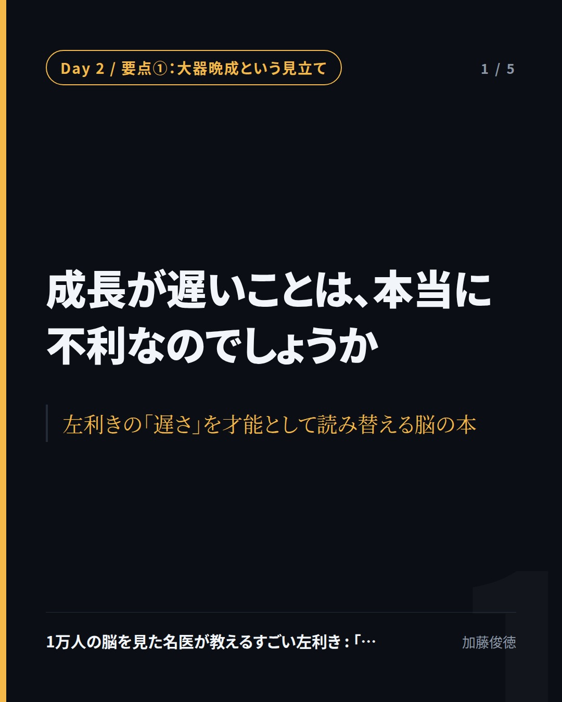
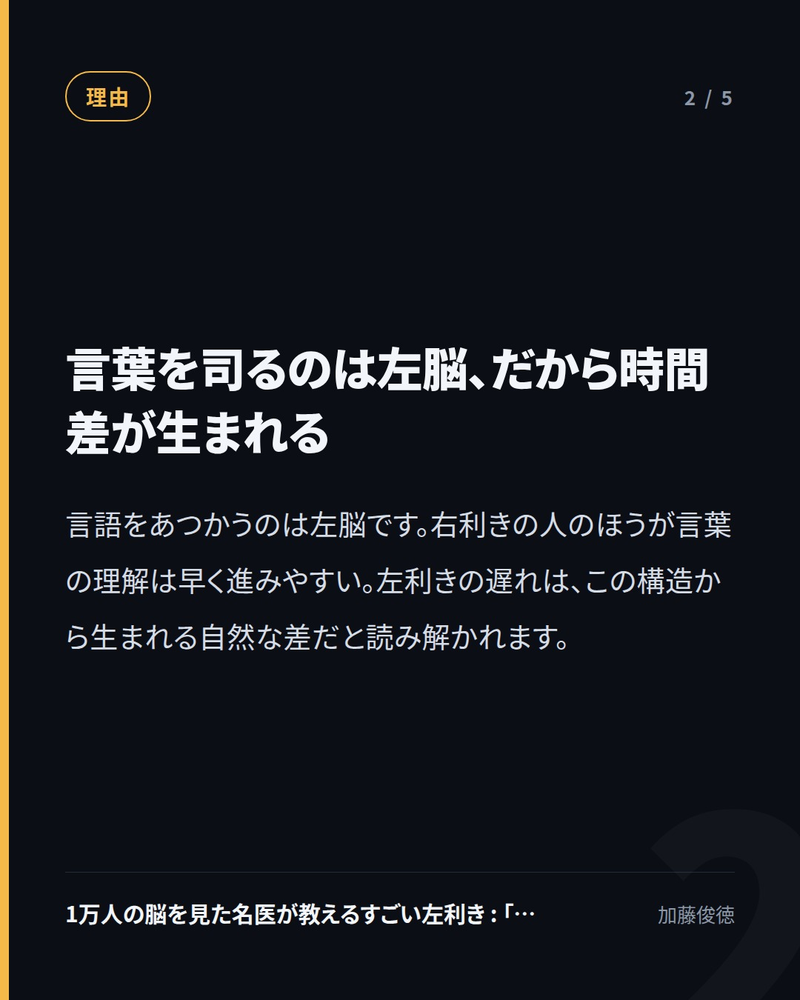
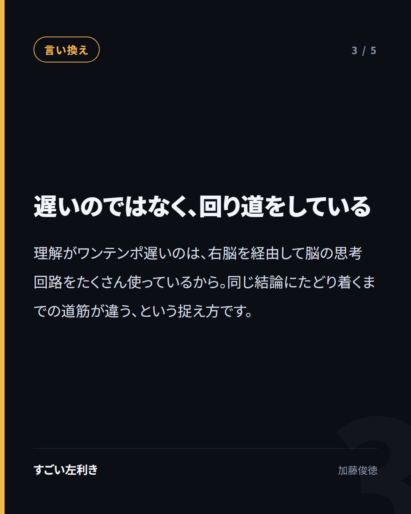
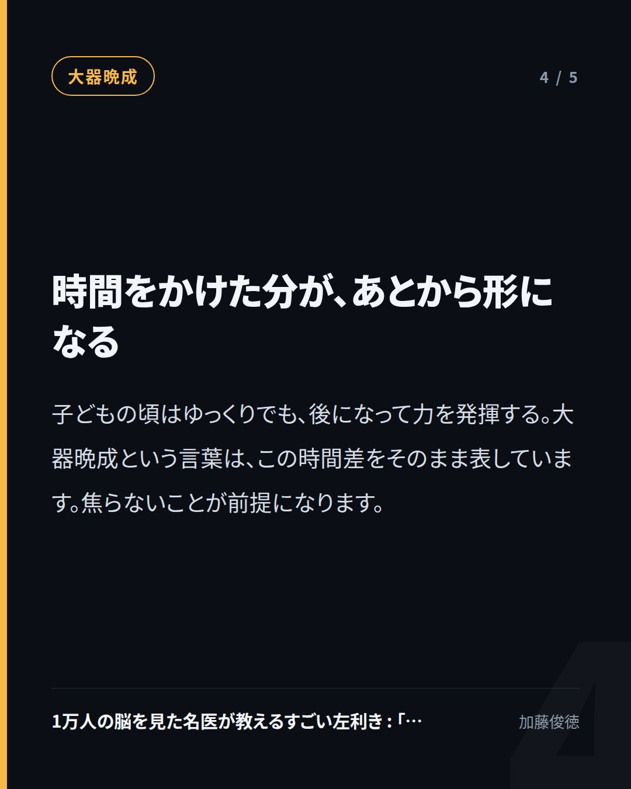
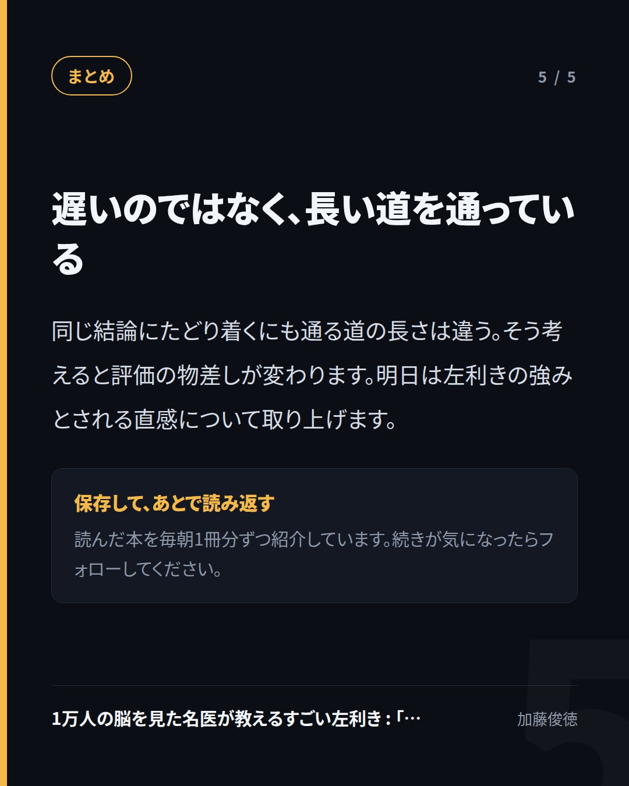
カードの文言
- 1 表紙: 満ち欠けを繰り返しながら 今日を生きる 五人の物語
- 2 書誌情報: 2022年11月9日 / 青山美智子
- 3 おすすめ1: つまずいてばかりの毎日に 少し疲れている方
- 3 おすすめ2: 短編がゆるやかにつながる オムニバスを味わいたい方
- 3 おすすめ3: 何かを新しく 始めたい気持ちのある方
- 4 問いかけ: 似ているようで違う一日を、 あなたはどう始めますか
- 5 本文: 元看護師、芸人、整備士、 女子高生、アクセサリー作家。 五人それぞれの日常が描かれる
- 6 本文: 彼らをつなぐのは タケトリ・オキナの ポッドキャスト『ツキない話』
- 7 本文: 各章の主人公が微妙に つながりあうオムニバス形式
- 8 本文: 朔（つきたち）は旧暦の新月。 何かを始めるのに ちょうどいい日
- 9 まとめ: 月の満ち欠けに重ねて 新しい一日を思い出させる一冊
キャプション
今回は、久しぶりに小説を。2023年本屋大賞にノミネートされた青山美智子さんの『月の立つ林で』です。 登場するのは、長年勤めた病院を辞めた元看護師、夢を諦めきれない芸人、家族との関係の変化に寂しさを抱える二輪自動車整備士、早く自立したい女子高生、仕事と家族のバランスに悩むアクセサリー作家。それぞれが日常でつまずきながら、タケトリ・オキナという男性のポッドキャスト『ツキない話』に耳を傾けます。 面白かったのは、各章の主人公たちが微妙につながりあうオムニバス形式であること。読み進めるうちに、さっきの話の隅にいた人が次の章の主役になっている、そんな感覚がありました。 もうひとつ、私にとっての発見は「朔（つきたち）」という言葉です。一日（ついたち）は旧暦で新月のこと。月がまた満ちていく起点だから、何かを始めるのにちょうどいい日なのだと理解しました。人も同じで、満ち欠けを繰り返しながら新しい毎日を紡いでいく。そう思うと、うまくいかない日にも意味がある気がします。 出版社の紹介によると、最後に仕掛けられた事実と読後に気づく繋がりが胸を打つ一冊とのこと。そこはぜひご自身で確かめてみてください。
書籍固有ハッシュタグ
根拠メモ (grounding)
- 書名・著者・出版社・出版日：書誌データ
- 表紙「満ち欠けを繰り返しながら」：内容紹介『満ち欠けを繰り返し、新しくてかけがえのない毎日を紡いでいく』
- recommend「つまずいてばかりの毎日」：内容紹介『つまずいてばかりの日常』
- recommend「新しく始めたい」：読書メモ『何かを始めるのにちょうどいい日』
- question「似ているようで違う一日」：内容紹介『似ているようでまったく違う、新しい一日を懸命に生きるあなたへ』
- point1 五人の職業：内容紹介の登場人物の記述
- point2 タケトリ・オキナ／『ツキない話』：内容紹介
- point3 オムニバス形式：読書メモ
- point4 朔＝旧暦の新月：読書メモ
- キャプションの本屋大賞ノミネート・最後の仕掛け：出版社の内容紹介（キャプション内で出典を明示）
- ジャンル「小説」：内容紹介の記述からの判断
08/22 (Sat)
GAFA nest stage
スコット・ギャロウェイ, 渡会 圭子
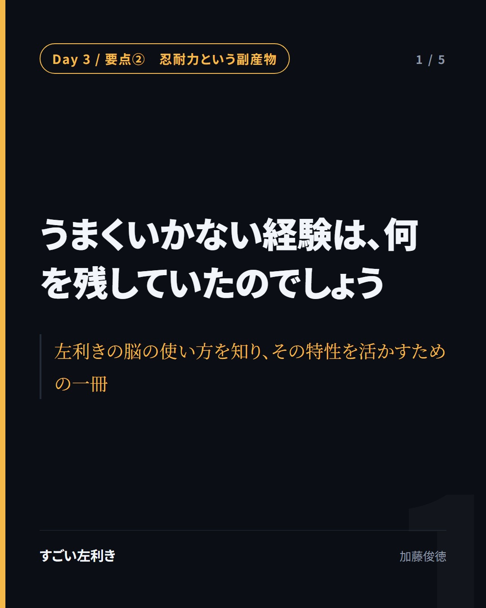
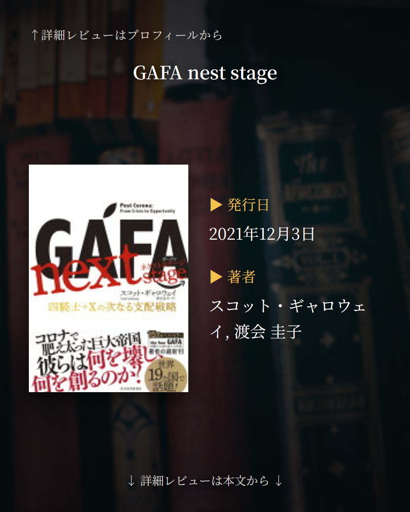
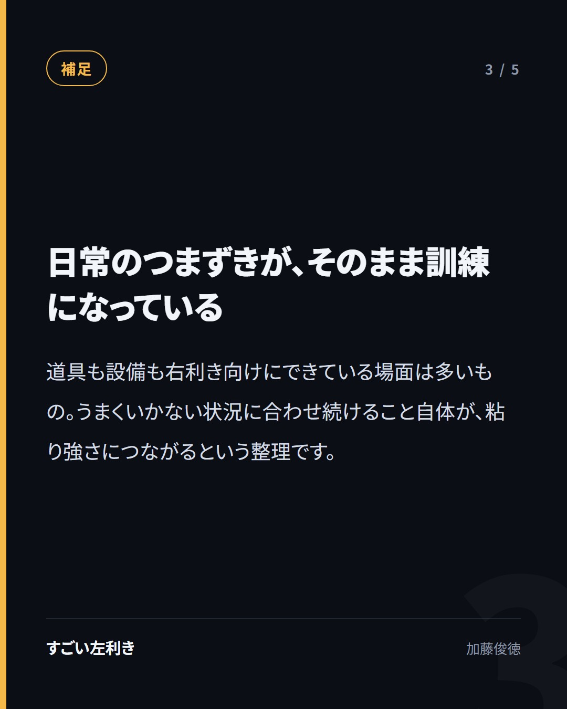
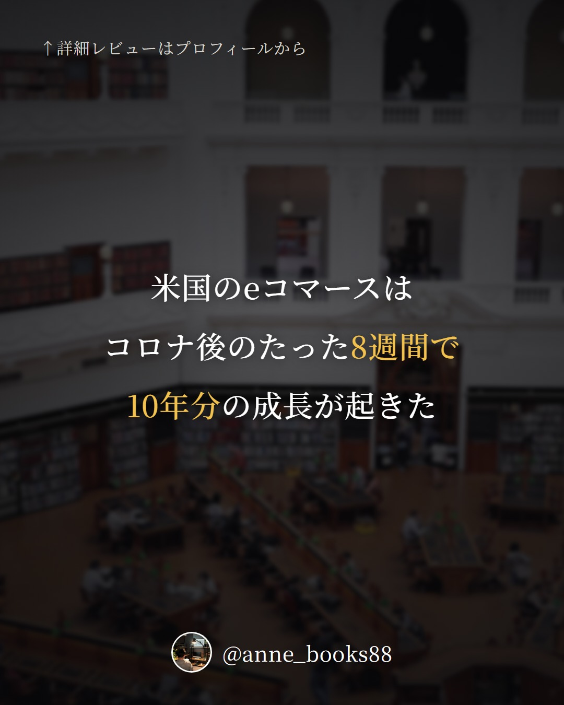
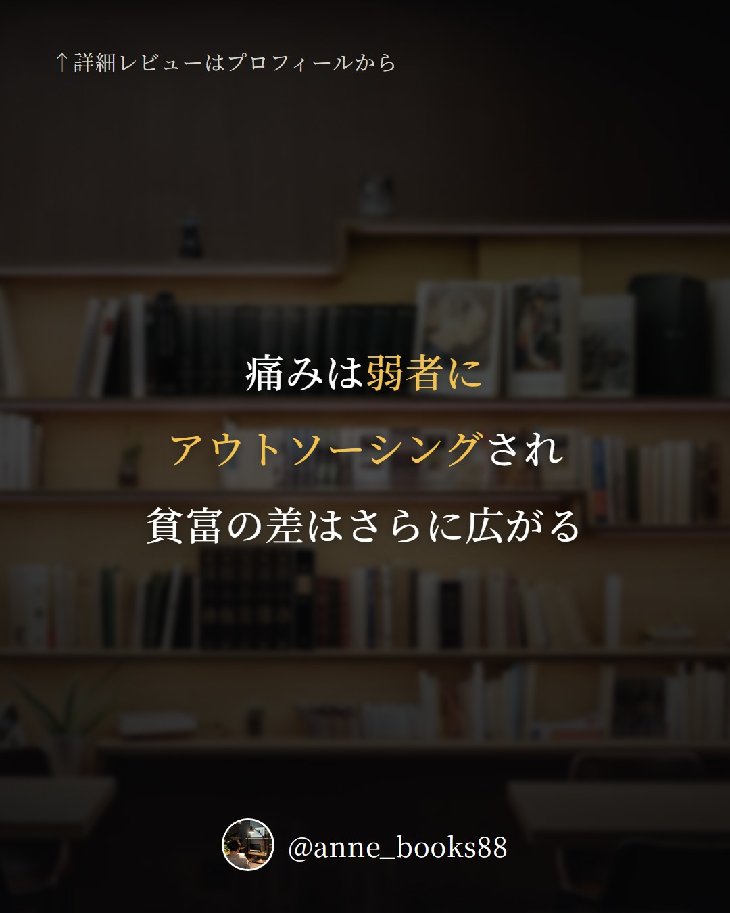
カードの文言
- 1 表紙: コロナで肥え太った 巨大帝国が 再び世界を変える
- 2 書誌情報: 2021年12月3日 / スコット・ギャロウェイ, 渡会 圭子
- 3 おすすめ1: GAFAの次の一手を 知っておきたい方
- 3 おすすめ2: コロナが経済に何を 残したのか整理したい方
- 3 おすすめ3: 自分の業界の未来を 考えておきたい方
- 4 問いかけ: 彼らは何を壊し、何を創るのか。 私たちはその世界で どう生きるのか
- 5 本文: 米国のeコマースは コロナ後のたった8週間で 10年分の成長が起きた
- 6 本文: 極小のウイルスが 特大の加速装置となり GAFAの成長を促した
- 7 本文: 痛みは弱者に アウトソーシングされ 貧富の差はさらに広がる
- 8 本文: GAFAは今後5年で 収益を1兆ドル増やす必要がある。 次の獲物はどの業界か
- 9 まとめ: 四騎士＋Xが塗り分ける 赤と青の世界を 先に見ておく一冊
キャプション
今回は、GAFAのその後を扱ったビジネス書です。『the four GAFA』の著者スコット・ギャロウェイによる最新刊で、コロナ以降に巨大帝国がどう膨らんだのかを追いかけた一冊でした。 読んでいて一番手が止まったのは、米国のeコマースがコロナ以降のたった8週間で10年分の成長を遂げたという話です。極小のウイルスが特大の加速装置になり、GAFAの成長をさらに促してしまった。時間の流れそのものが変わったのだと実感しました。 もうひとつ印象に残ったのが、痛みが弱者にアウトソーシングされ、貧富の差がさらに拡大していく構図です。強者はもっと強くなり、弱者はもっと弱くなる。加速の裏側で何が起きているのかを、目を逸らさずに書いているところが誠実だと感じました。 そして本書は「＋X」として、マイクロソフト、エアビーアンドビー、ネットフリックス、テスラ、ショッピファイなど多くの企業を取り上げています。GAFAは今後5年で収益を1兆ドル増やす必要があり、そのために新しい市場へ入り込んでいく。次の獲物はあなたの業界かもしれない、という指摘は他人事ではありません。 自分の仕事がどの側に置かれているのか、一度考えてみたくなる本でした。
書籍固有ハッシュタグ
根拠メモ (grounding)
- 表紙・summary: 内容紹介「コロナで肥え太った巨大帝国が『再び』世界を変える」「四騎士＋Xが世界を『絶望の赤』と『希望の青』に塗り分ける」
- question: 内容紹介「彼らは何を壊し、何を創るのか？ 私たちは彼らの世界でどう生きるのか？」
- points1・2: 読者本人の読書メモ「コロナ以降のたった8週間で10年分の成長」「極小のウイルスが特大の加速装置」
- points3: 内容紹介「痛みは『弱者にアウトソーシング』された」「強者はもっと強くなり、弱者はもっと弱くなる」＋読書メモ「貧富の差がさらに拡大する構図」
- points4: 内容紹介「GAFAは今後5年で収益を1兆ドル増やす必要がある」「次なる獲物は、あなたの業界かもしれない」
- キャプションの企業名: 内容紹介の『＋X』企業リストより
- recommend3項目: 内容紹介の趣旨から構成（一般論を含む）
08/23 (Sun)
プラットフォーム経済圏
木内登英
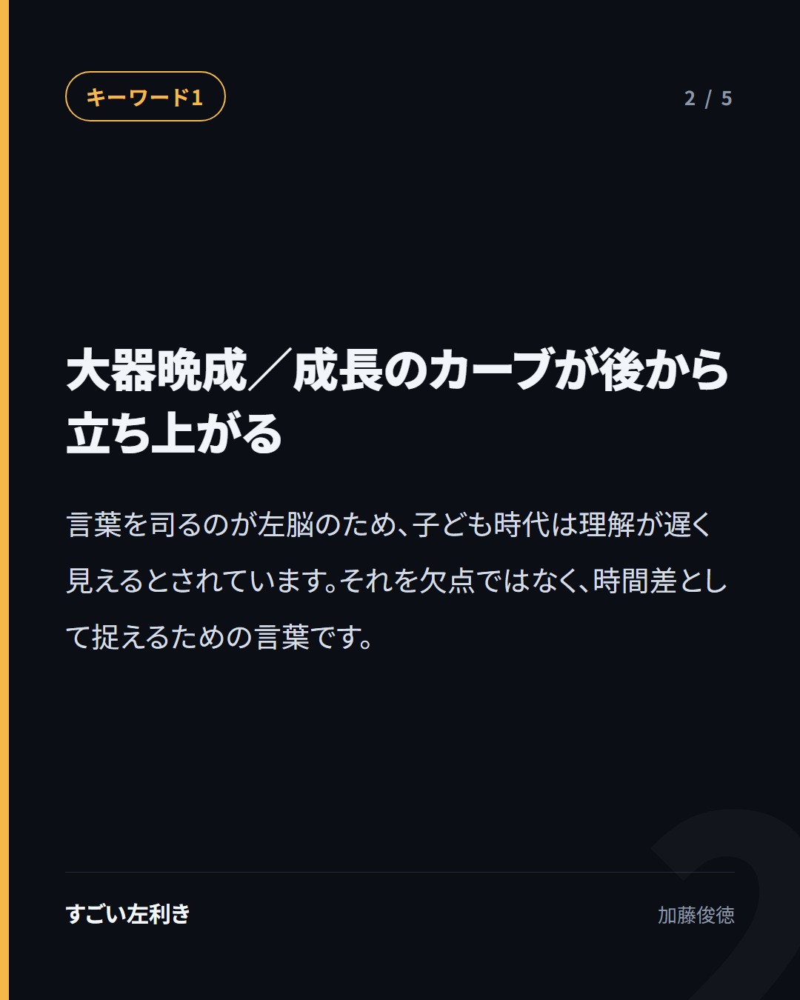
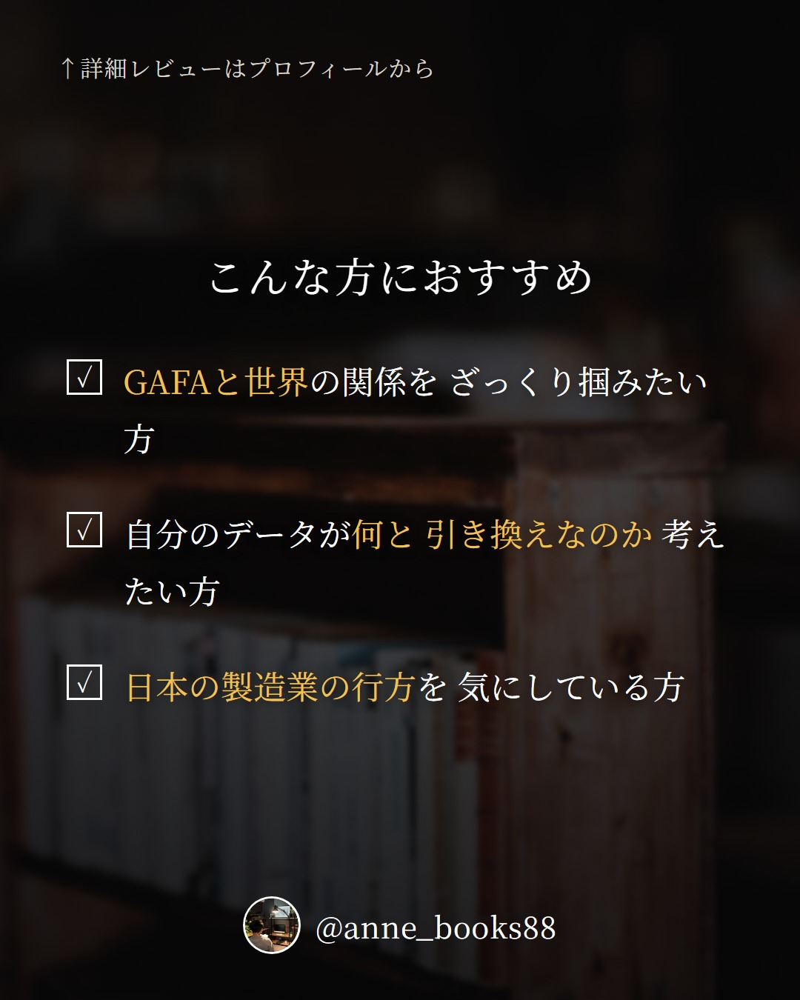
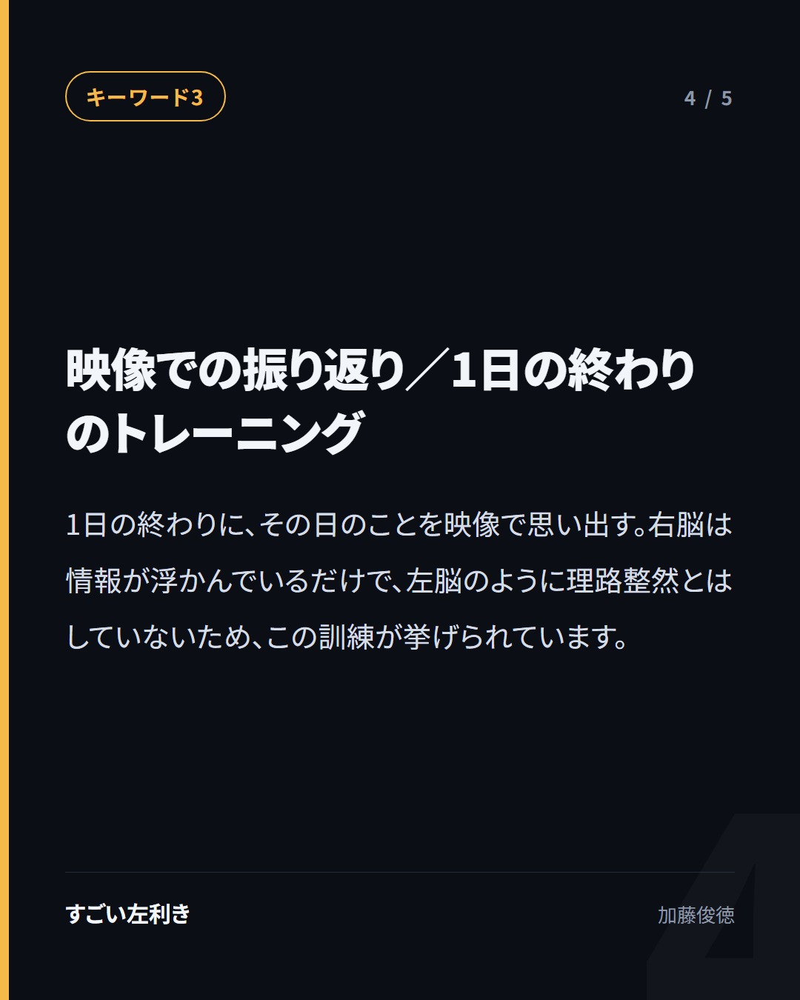
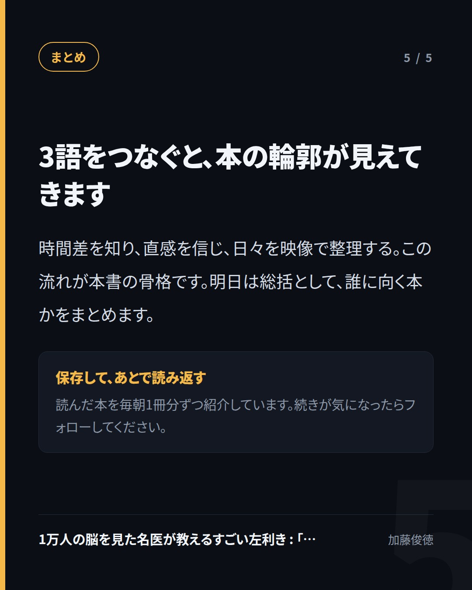
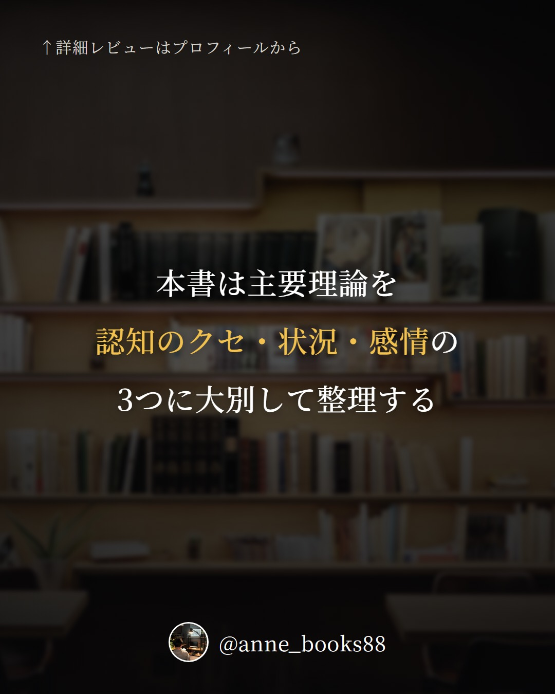
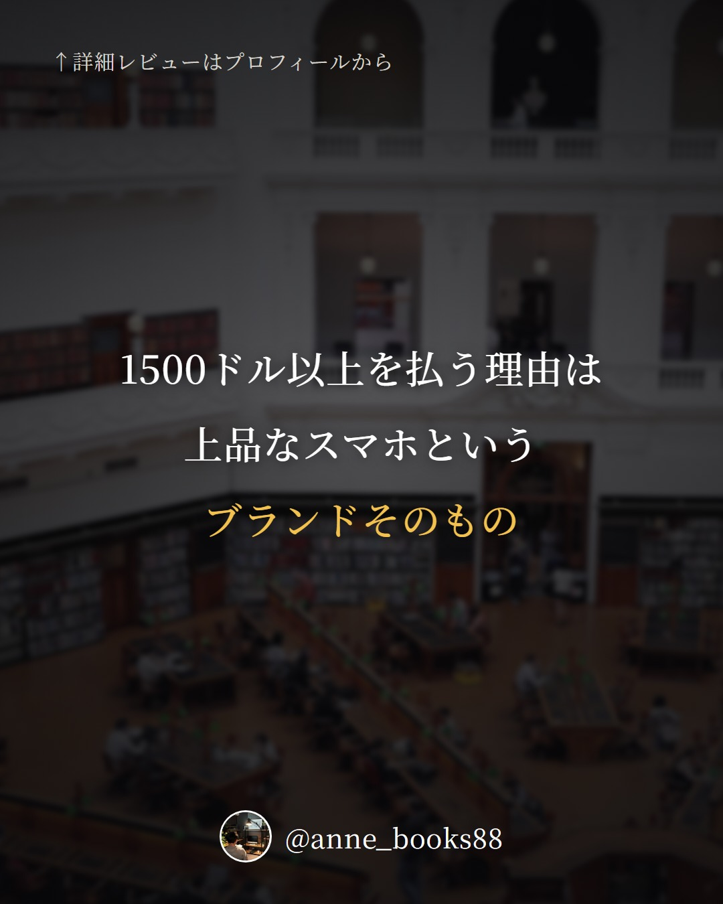
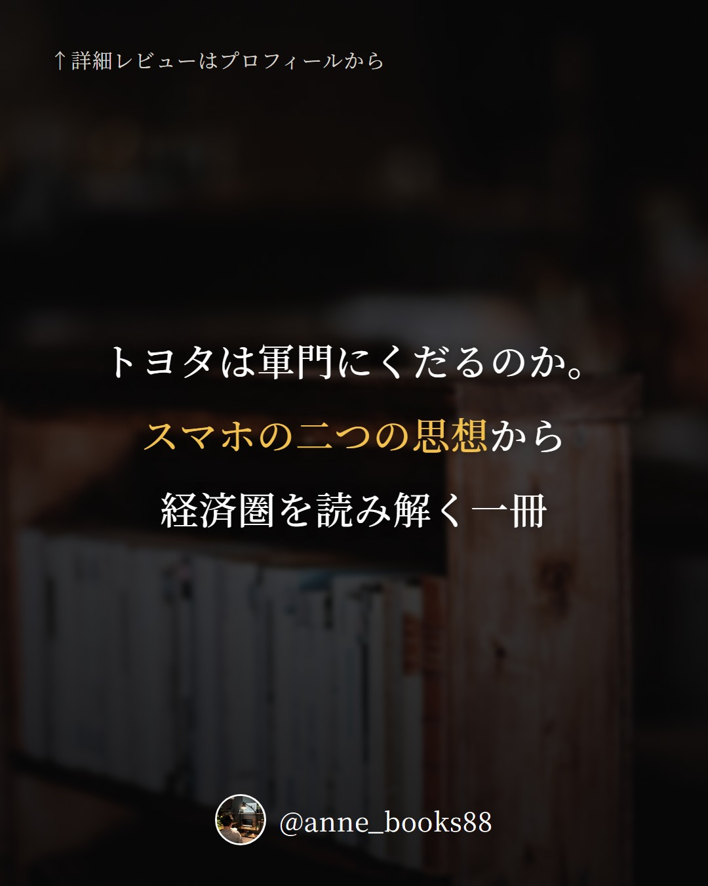
カードの文言
- 1 表紙: GAFA対世界。 スマホの赤と青が 分ける経済圏
- 2 書誌情報: 2019年5月 / 木内登英
- 3 おすすめ1: GAFAと世界の関係を ざっくり掴みたい方
- 3 おすすめ2: 自分のデータが何と 引き換えなのか 考えたい方
- 3 おすすめ3: 日本の製造業の行方を 気にしている方
- 4 問いかけ: あなたのスマホは 赤と青、どちらの ビジネスの上にある？
- 5 本文: 赤のビジネス、Android。 プライバシーと引き換えに 価値あるものを安く手に入れる
- 6 本文: 青のビジネス、Apple。 顧客データを売らないと 決めた側の戦い方
- 7 本文: ティム・クック曰く データを売れば巨額の利益。 それをしないと決めた
- 8 本文: 1500ドル以上を払う理由は 上品なスマホという ブランドそのもの
- 9 まとめ: トヨタは軍門にくだるのか。 スマホの二つの思想から 経済圏を読み解く一冊
キャプション
今回はプラットフォーム経済、GAFAと世界の関係を扱った一冊です。エコノミストの木内登英さんが、2019年時点の景色を読み解いています。 読んでいて一番おもしろかったのは、スマホビジネスを「赤」と「青」に分ける見方でした。赤はAndroid。ユーザーはプライバシーと引き換えに、価値あるものを安く手に入れられる。無料や低価格の裏側にあるのが自分のデータだと言われると、当たり前に使っているサービスの見え方が少し変わります。 もう一方の青がApple。ティム・クックの「顧客のデータを売れば巨額の利益を得られるが、Appleはそれをしないと決めた」という言葉が印象的でした。上品なスマホに1500ドル以上を払うのは、そのブランドのため。データを売らないという選択そのものが商品になっている、という構図です。 読みながら私が気になったのは、ではトヨタのビジネスはこの軍門にくだるのか、ということでした。スマホの話が、そのまま日本の製造業の話につながっていく。 あなたの手元のスマホは、赤と青のどちらですか。理由まで説明できるでしょうか。
書籍固有ハッシュタグ
根拠メモ (grounding)
- 書名・著者・出版社・出版日・ISBNは書誌データ
- 「赤の（スマホ）ビジネス…android：プライバシーと引き換えに価値あるものを安く入手できる」は読書メモ
- 「青の（スマホ）ビジネス…apple」「ティムクック曰く顧客のデータを売れば巨額の利益を得られるが、appleはそれをしないと決めた」は読書メモ
- 「上品なスマホ、1500ドル以上払うのはそのブランドの為」は読書メモ
- 「トヨタのビジネスは軍門にくだるのか」は読書メモの所感
- 副題「トップエコノミストが今を読み解く GAFA vs.世界」から、GAFAと世界・エコノミストの視点という表現
- 「日本の製造業の行方を気にしている方」はトヨタに関する読書メモからの拡張（一般論寄り）
08/24 (Mon)
26年8月後半
新刊特集
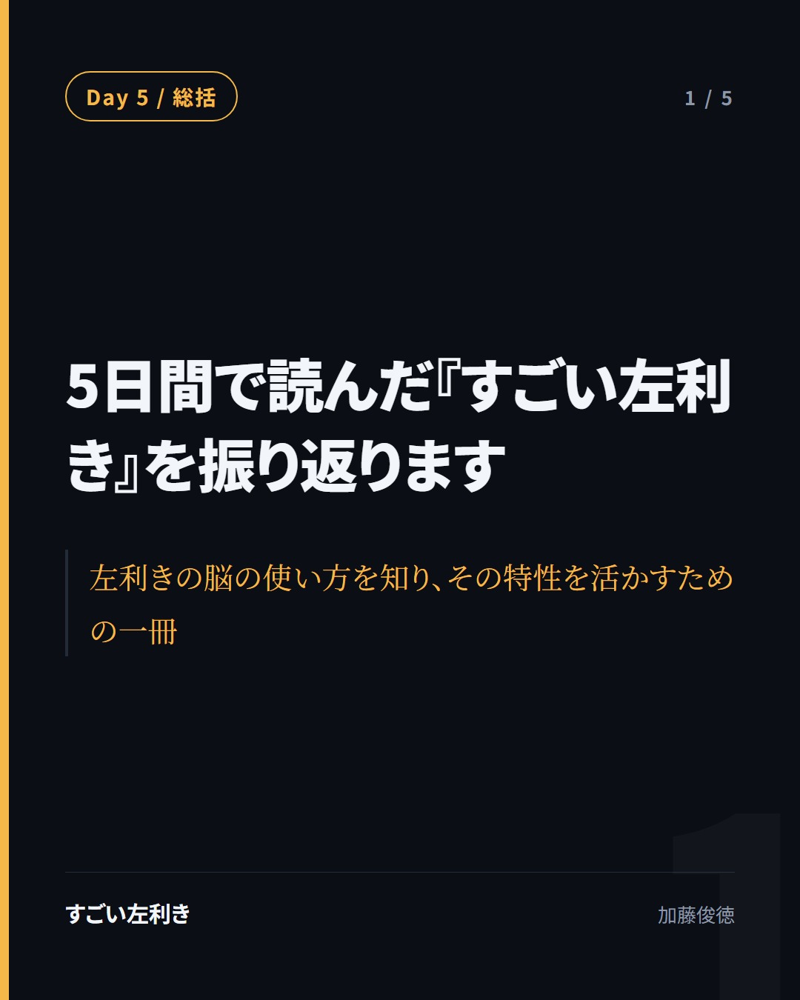
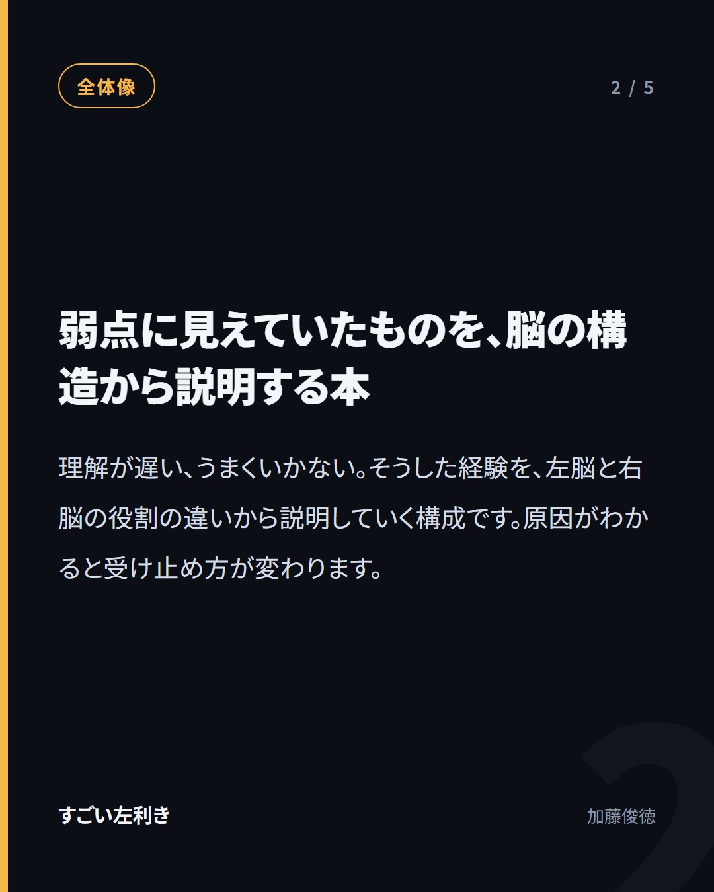
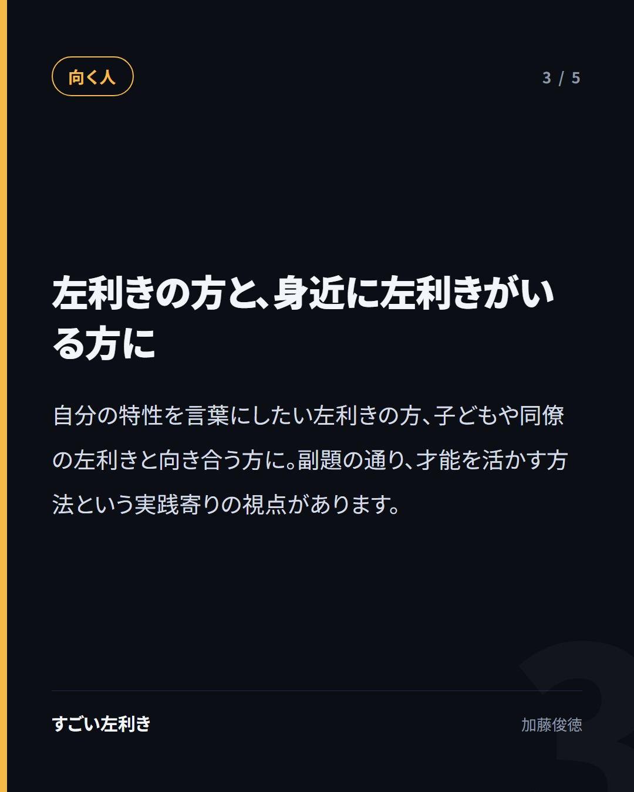
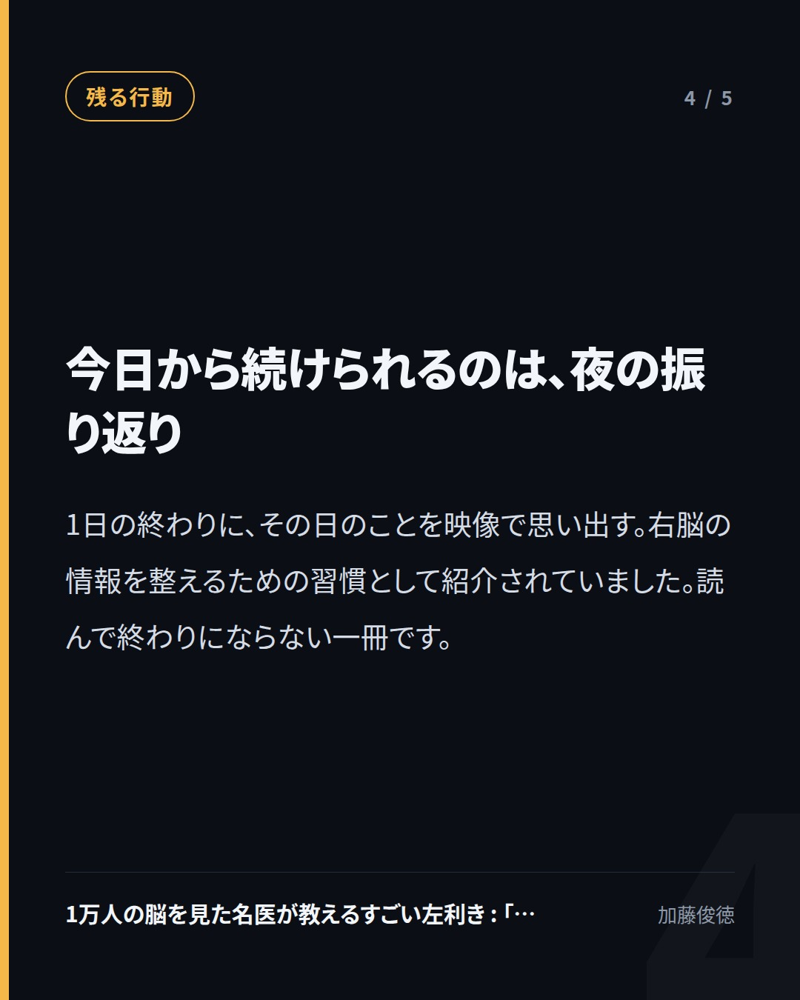
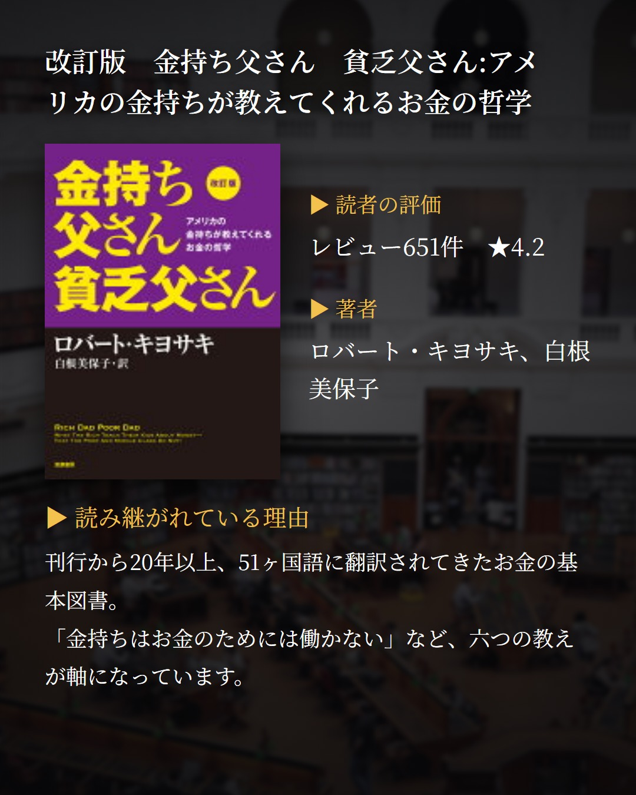
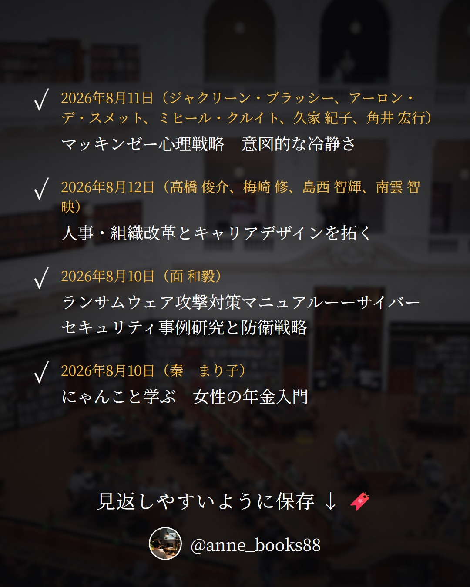
カードの文言
- 1 表紙: 楽しみにしている 26年8月後半 新刊4選
- 2 マッキンゼー心理戦略 意図的な冷静さ（2026年8月11日 / ジャクリーン・ブラッシー、アーロン・デ・スメット、ミヒール・クルイト、久家 紀子、角井 宏行） 注目: プレッシャー下でも判断を誤らないための冷静さを、 構造化して実践する手法という切り口が気になります。
- 3 人事・組織改革とキャリアデザインを拓く（2026年8月12日 / 高橋 俊介、梅崎 修、島西 智輝、南雲 智映） 注目: 人事改革とキャリアデザインを牽引した人物の仕事史を オーラルヒストリーとして辿る構成が面白そうです。
- 4 ランサムウェア攻撃対策マニュアルーーサイバーセキュリティ事例研究と防衛戦略（2026年8月10日 / 面 和毅） 注目: 侵入・データ窃取から始まる最近の攻撃の流れを、 実際の対応事例まで含めて追えるのが心強そうです。
- 5 にゃんこと学ぶ 女性の年金入門（2026年8月10日 / 秦 まり子） 注目: 就職・結婚・出産・離婚とライフイベントごとに 年金がどう変わるかを整理できるのがありがたいです。
- 6 まとめ: チェックリスト
キャプション
8月後半の気になる新刊をまとめました。特に1冊目の『マッキンゼー心理戦略 意図的な冷静さ』は、なぜ肝心なときに人は怒り焦って判断を誤るのかという問いから始まり、冷静な思考と行動を構造化して実践する手法を扱うそうです。防御状態と学習状態という分け方や、心理的安全性をチームの土台として捉える視点が、日々の仕事にも重ねて読めそうで楽しみです。2冊目の『人事・組織改革とキャリアデザインを拓く』は、一人の実務家の仕事史からキャリア論の源流をたどる構成に惹かれました。3冊目の『ランサムウェア攻撃対策マニュアル』は、攻撃の流れと実際の対応事例が並ぶので、担当でなくても知っておきたい内容だと思います。4冊目の『にゃんこと学ぶ 女性の年金入門』は、ライフイベントごとに変わる年金を整理できそうです。おすすめな本があればぜひコメントいただけると幸いです！
書籍固有ハッシュタグ
根拠メモ (grounding)
- 17: 内容紹介の「なぜ、肝心なときに、人は怒り、焦り、その結果、判断を誤るのか？」「冷静沈着な思考と行動を徹底して構造化」「防御状態／学習状態」「心理的安全性は学び続けるチームの土台」に基づく
- 20: 「高橋俊介」「人事改革」「キャリアデザイン論」「仕事史をオーラルヒストリーとして描く」に基づく
- 11: 「攻撃者が組織の内部に侵入し、データ窃取を行って最後にランサムウェアを起動する」「第3章 ランサムウェア攻撃の流れ」「第6章 ランサムウェア攻撃の対応事例」に基づく
- 16: 「就職、結婚、出産、仕事の再開、子の成人、結婚相手との死別、離婚」「ライフイベントに応じて女性の年金は変化します」に基づく
08/25 (Tue)
スタンフォード式 最高の睡眠
西野精治
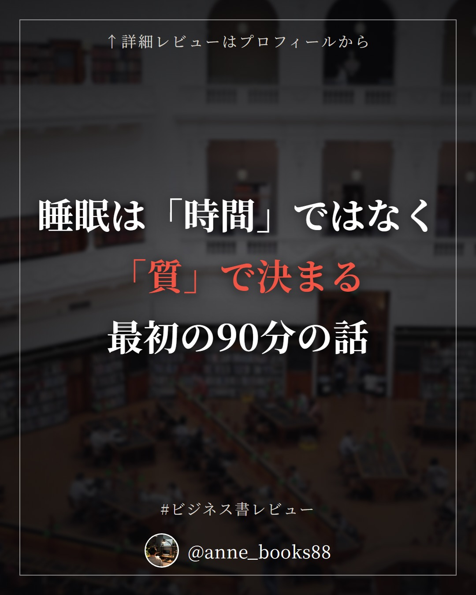


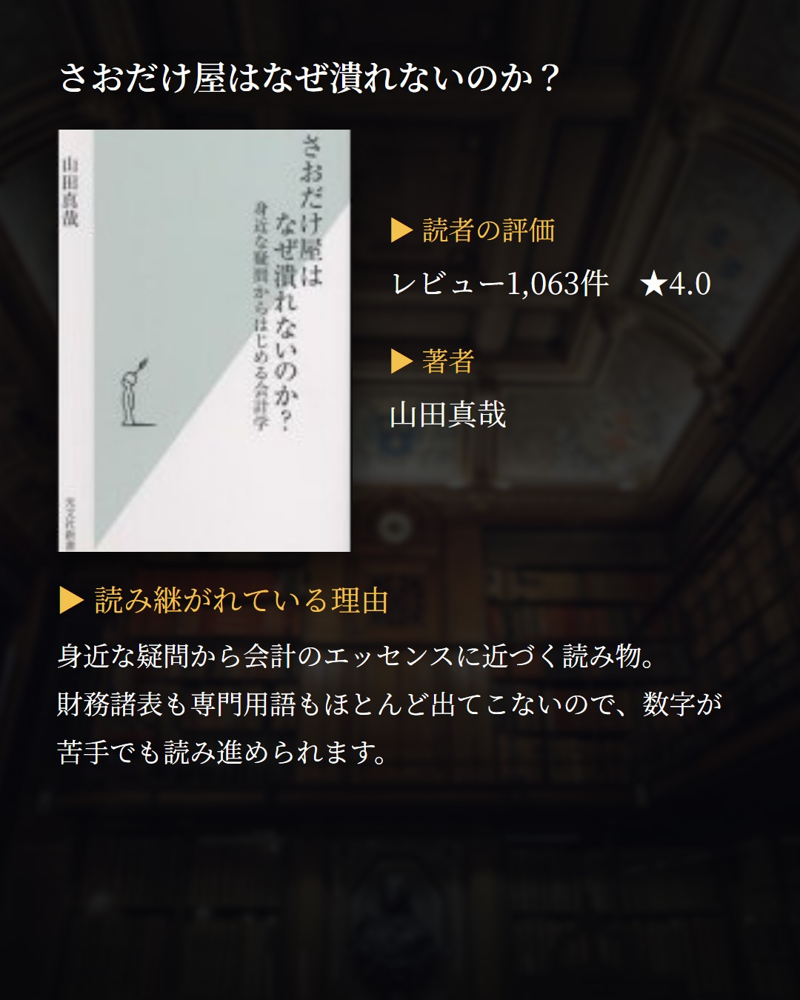


カードの文言
- 1 表紙: 睡眠は「時間」ではなく 「質」で決まる 最初の90分の話
- 2 書誌情報: 2017年3月1日 / 西野精治
- 3 おすすめ1: 寝つきが悪くて 朝もすっきり起きられない方
- 3 おすすめ2: 日中の眠気に 悩まされている方
- 3 おすすめ3: 土日の寝だめで 疲れを取ろうとしている方
- 4 問いかけ: 眠った時間の長さだけで 疲れは本当に 取れているのでしょうか
- 5 本文: 睡眠は「時間」ではなく「質」。 著者が30年近く研究して たどり着いた結論
- 6 本文: 眠り始めの 「黄金の90分」に 最高の睡眠の鍵がある
- 7 本文: 寝だめは基本できない。 平日の不足を土日で 取り戻すのは無理
- 8 本文: 1時間早く寝るのは難しい。 潔く1時間早く起きると 心積もりする方がいい
- 9 まとめ: 長く寝るより、 最初の90分を整える。 眠りの常識を見直す一冊
キャプション
今回は、睡眠をテーマにしたビジネス書です。スタンフォード大学の睡眠研究機関で所長を務める西野精治先生が、30年近くの研究からたどり着いた「最高の睡眠」の考え方をまとめた一冊。出版社の紹介によると、スタンフォードは「睡眠研究のメッカ」と呼ばれる場所だそうです。 本書の軸は「睡眠は『時間』ではなく『質』で決まる」という一文。章立てにも「夜に秘められた『黄金の90分』の法則」とあり、眠り始めの90分がいかに大事かが繰り返し語られます。長く寝られない日があっても、最初の90分の質を上げれば手は打てる。そう考えられるだけで、少し気持ちが軽くなりました。 私が読んでいて特に納得したのは、寝だめは基本的にできないという話。平均7.2時間の睡眠でも足りていないぶんを、土日でまとめて取り戻すのは無理なのだと知りました。 もうひとつは、明日に備えて1時間早く寝るのは難しい、という指摘。それなら潔く1時間早く起きるつもりでいた方が、結果としてよい睡眠が得られる。早寝を頑張って布団の中で目が冴えるより、ずっと現実的です。 寝つきが悪い、朝起きられない、日中眠い。心当たりがある方は、まず今夜の最初の90分から見直してみませんか。
書籍固有ハッシュタグ
根拠メモ (grounding)
- 書名・著者・出版社・出版日は書誌情報より
- cover・points1「時間ではなく質」は内容紹介の引用文より
- points2「黄金の90分」は目次2章より
- points3「寝だめは基本出来ない／平均7.2時間」は読書メモより
- points4「1時間早く寝るのは難しい／1時間早く起きる」は読書メモより
- recommend「寝つきが悪い・朝起きれない・日中眠たい」は内容紹介より
- キャプションの「睡眠研究のメッカ」「30年近く研究」は出版社の内容紹介より（その旨を明記）
- summary「最初の90分を整える」は目次2章と内容紹介からの要約
- キャプション中の『気持ちが軽くなりました』『納得した』等の所感は読書メモの内容に沿った感想表現（メモ外の実体験は記載していない）
08/26 (Wed)
メタバース*ビジネス革命
西田 宗千佳
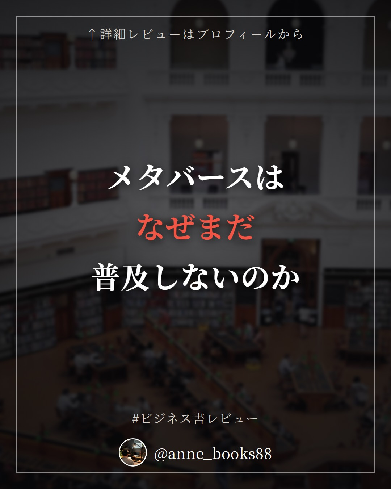
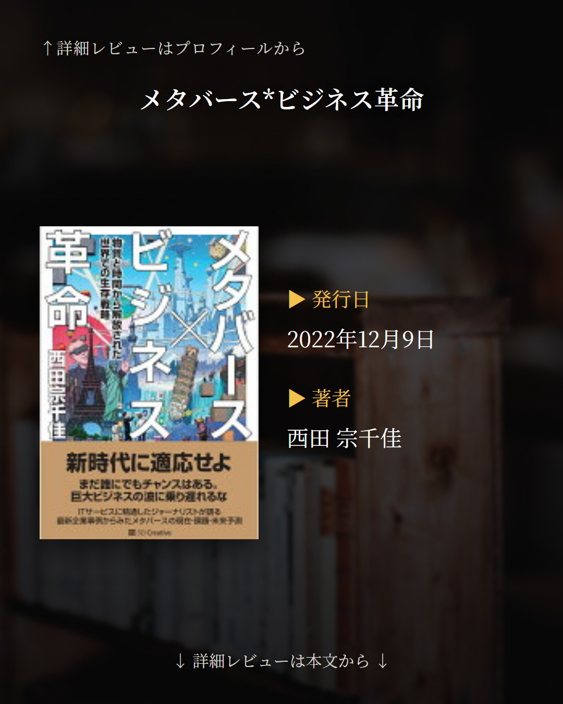
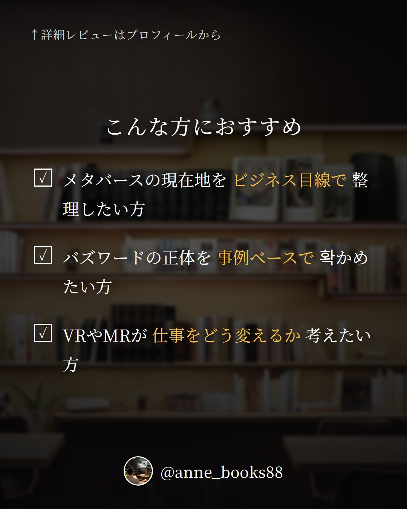

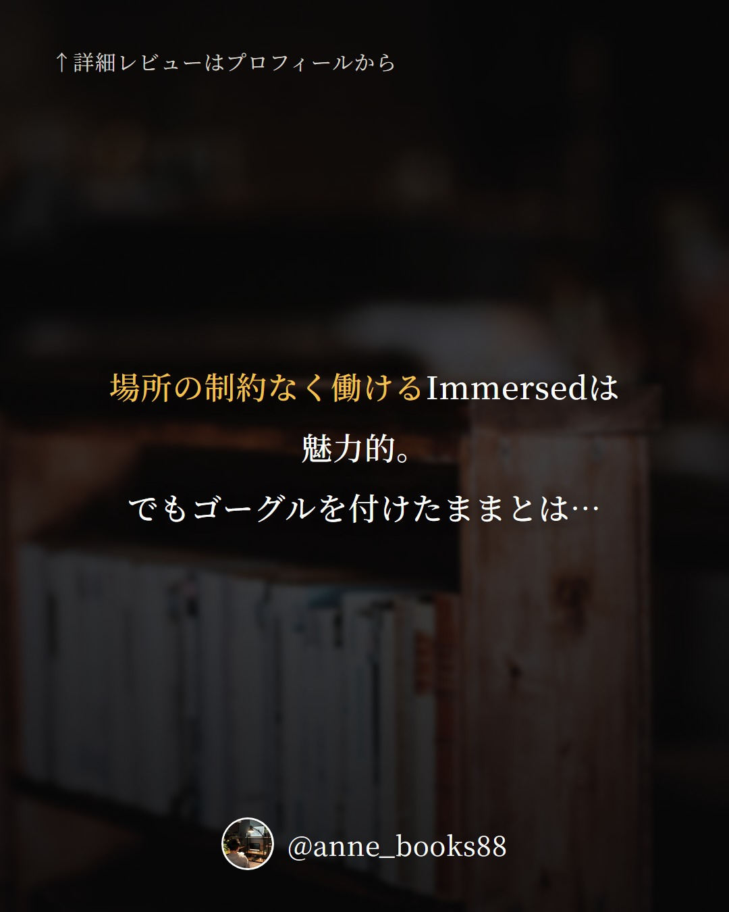
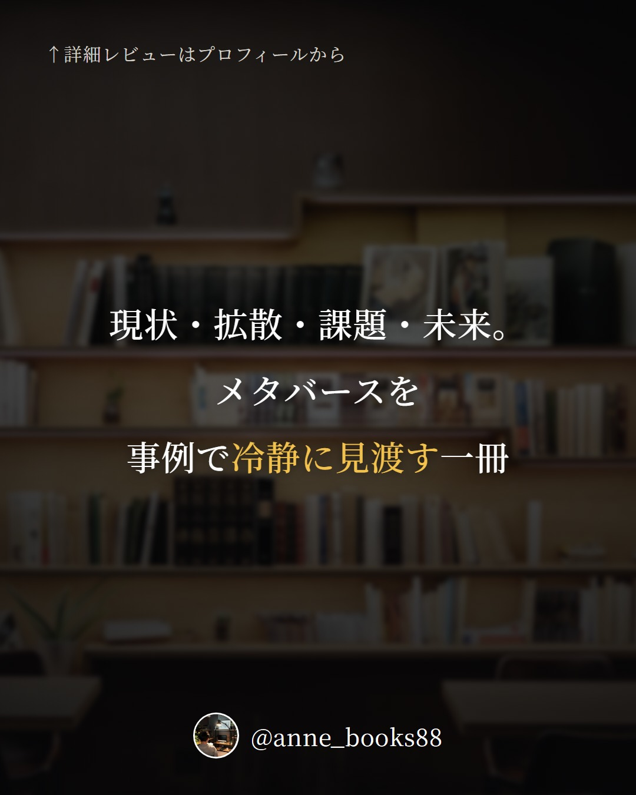
カードの文言
- 1 表紙: メタバースは なぜまだ 普及しないのか
- 2 書誌情報: 2022年12月9日 / 西田 宗千佳
- 3 おすすめ1: メタバースの現在地を ビジネス目線で 整理したい方
- 3 おすすめ2: バズワードの正体を 事例ベースで 확かめたい方
- 3 おすすめ3: VRやMRが 仕事をどう変えるか 考えたい方
- 4 問いかけ: メタバースは 何十年も追われてきた技術。 それでも今、何が足りない？
- 5 本文: メタバースは突然の流行ではない。 何十年も追い求められてきた 技術の延長線上にある
- 6 本文: 普及の最大のハードルは HMDが非常に重いこと。 ここが解消されれば一気に進む
- 7 本文: oViceのような常時ログイン型は 足元の現実解。 ただ私はメリットを感じづらい
- 8 本文: 場所の制約なく働けるImmersedは 魅力的。 でもゴーグルを付けたままとは…
- 9 まとめ: 現状・拡散・課題・未来。 メタバースを 事例で冷静に見渡す一冊
キャプション
今回は、バズワードとして語られがちな「メタバース」を、事例ベースで冷静に整理してくれるビジネス書です。 面白かったのは、メタバースが2021年に突然現れたものではなく、何十年も追い求められてきたテーマの延長にある、という視点。本書は現状・拡散・課題・未来という流れで、今何ができて、これから何が来るのかを企業事例を挙げながら考察していきます。 読みながら私が一番腑に落ちたのは、普及の一番のハードルはHMD（ヘッドマウントデバイス）が非常に重いことだ、という点。この課題が圧倒的に大きく、逆に言えばここが解消されれば加速度的に普及すると想定されます。技術の話よりも、まず「重い」という物理の話なのだと。 ビジネス寄りの現実解として挙がるoViceのようなサービスは、毎日ログインしてもらうという意味では重要なのですが、個人的にはメリットを感じづらいところ。一方で、ディスプレイや場所の制約なく仕事ができるImmersedは、現代版の精神と時の部屋のようで素直に魅力的でした。とはいえ、ゴーグルを付けたまま一日仕事をする自分はまだ想像できません。 期待と現実の両方を見たい方に。あなたはゴーグルを付けて働けそうですか？
書籍固有ハッシュタグ
根拠メモ (grounding)
- 表紙・問いかけ：読書メモ「普及の一番のハードルはHMDが非常に重たい事」＋内容紹介「なぜ今メタバースが騒がれているのか」
- points1：内容紹介「唐突に現れたわけではなく、何十年も追い求められてきたもの」
- points2：読書メモのHMDの重さに関する記述
- points3：読書メモ「oVice等はメタバースの足元現実解」「個人的にはあまりメリットは感じづらい」
- points4：読書メモ「現代版 精神と時の部屋『Immersed』」「ゴーグル付けたまんま仕事するなんてとても想像できない」
- summary：目次構成 Part1現状／Part2拡散／Part3・4課題／Part5未来、および内容紹介の「多くの企業の事例を挙げながら」
- recommend：内容紹介の3つの問い（なぜ騒がれているか／何ができるか／これからどうなるか）に基づく
- キャプション末尾の問いかけ：読書メモの所感を踏まえた読者への呼びかけ（一般論）
08/27 (Thu)
論語と算盤（上 自己修養篇）
不明
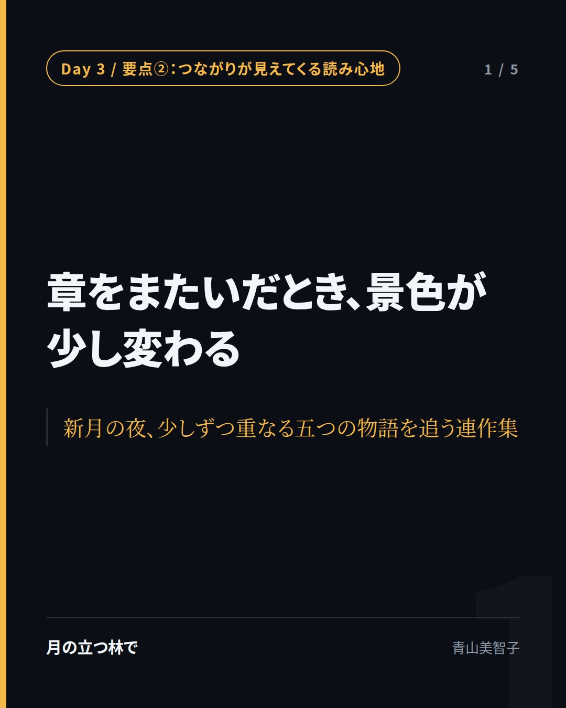

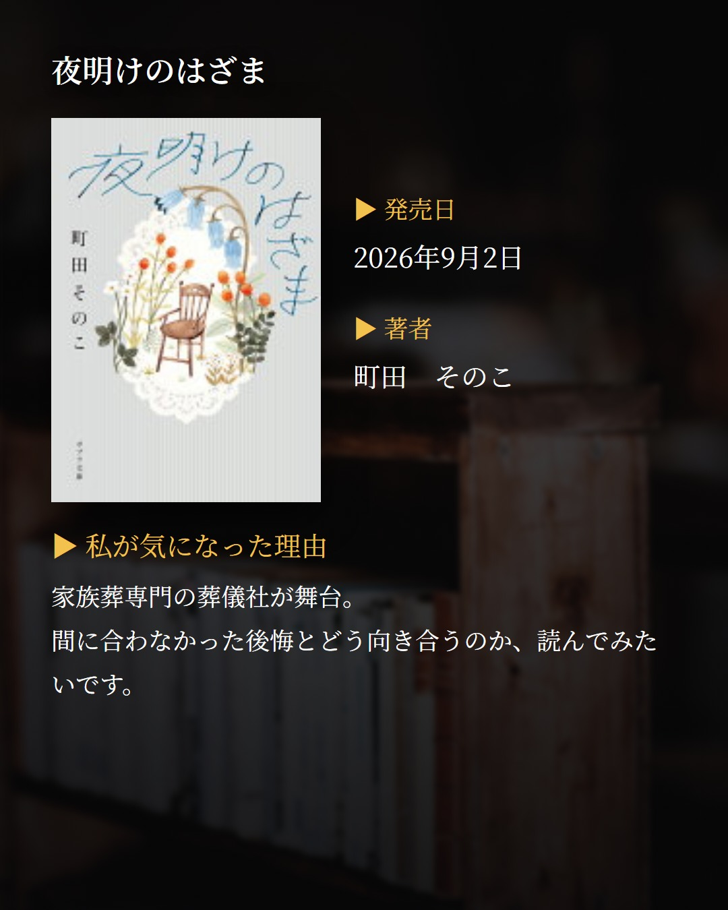
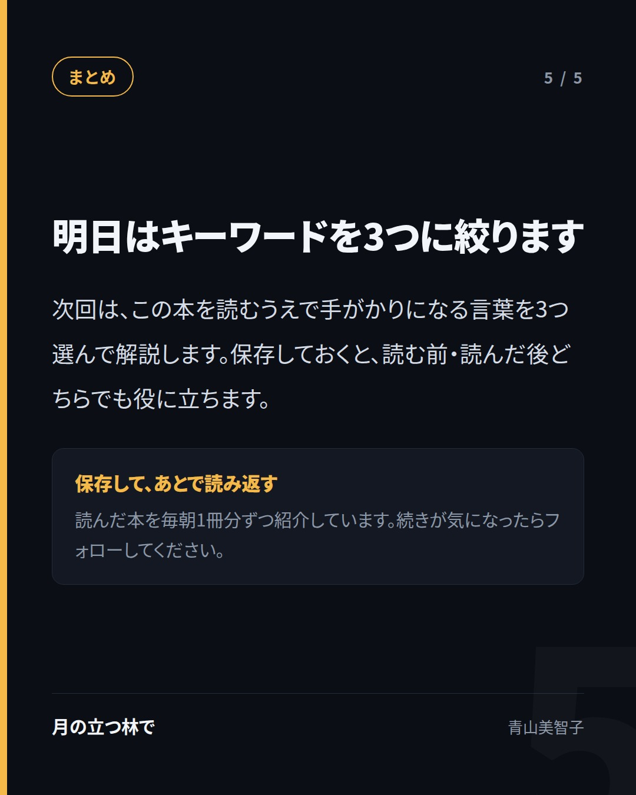
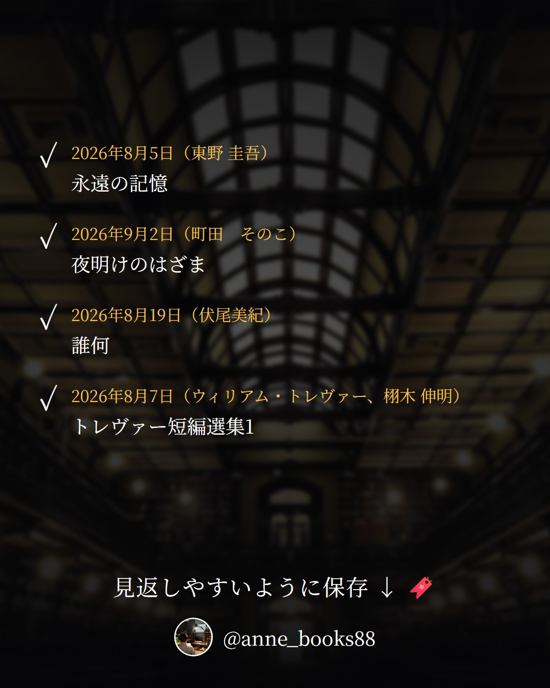
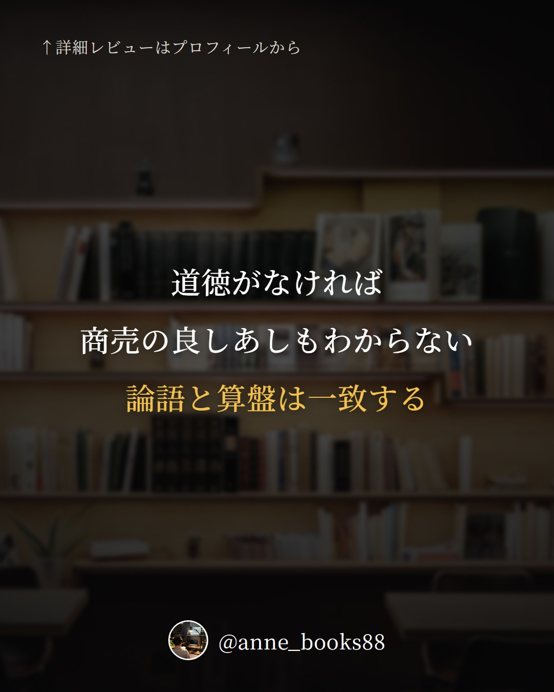
カードの文言
- 1 表紙: 道徳と商売は 一致すべきもの 100年前の言葉が今に響く
- 2 書誌情報: / 不明
- 3 おすすめ1: 古典を現代語訳で 読んでみたい方
- 3 おすすめ2: 仕事の判断軸に 道徳を置きたい方
- 3 おすすめ3: 学びを生涯続ける 姿勢を持ちたい方
- 4 問いかけ: もうけの良し悪しを 何を基準に 判断していますか
- 5 本文: 是非と善悪を見分け 利害と得失を識別する それが事に当たる基本
- 6 本文: 言語も挙動も すべてが「中庸」で あることが望ましい
- 7 本文: 常識の根本原則は 智・情・意の三つ
- 8 本文: 一人の勉強は町に波及し やがて国力になる 学ぶのは自分だけの為でない
- 9 まとめ: 道徳がなければ 商売の良しあしもわからない 論語と算盤は一致する
キャプション
今回は、古典を現代語訳で読むという一冊です。『論語と算盤（上 自己修養篇）』を現代語訳で初めて読み通しました。とても読みやすく、100年前に書かれたとは思えないくらい今の感覚にマッチしていて驚きました。 印象に残ったのは三つ。一つめは、事に当たるときの姿勢について。とっぴなことをせず、ものごとの是非・善悪を見分け、利害・得失を識別する。そして言語も挙動もすべてが「中庸」になっていることが望ましい、という話です。常識の根本原則は智・情・意である、という整理も腑に落ちました。 二つめは、学びについて。智力を働かせること、つまり勉学に励むことは一時期のことではなく、生涯を通じてやっと十分だと言える。しかも一人が勉強することは町全体に波及し、ひいては国力になる。人は自分のためだけでなく、街や国のためにも学ぶのだという視点は、勉強を続ける理由として新鮮でした。 三つめは、書名そのものの主張です。道徳がなければ商売の良しあしもわからない。論語と算盤は一致すべきものである。もうけを測る物差しの手前に、道徳という基準が要るのだという話でした。 古典は難しそうと感じている方こそ、現代語訳から入ってみてほしい一冊です。
書籍固有ハッシュタグ
根拠メモ (grounding)
- cover・summary：メモ「道徳がなければ商売の良しあしもわからない。論語と算盤は一致すべきものである」
- cover「100年前の言葉が今に響く」：メモ「100年前に書かれたとは思えないくらい現代にマッチする」
- recommend1：メモ「現代語訳として初めて読了。とても読みやすく」
- recommend2：メモの道徳と商売の一致の記述から
- recommend3：メモ「生涯を通じてやっと十分だと言える」
- question：メモ「道徳がなければ商売の良しあしもわからない」を問いに変換
- points1・2：メモ「是非/善悪を見分け利害・得失を識別し 言語と挙動全てが『中庸』」
- points3：メモ「常識の根本原則≒智/情/意」
- points4：メモ「一人が勉強することが町全体に波及する。それは引いては国力の為」
- 著者名・出版日・ページ数：根拠データに記載なく不明のため空欄
08/28 (Fri)
サイバーエージェント 突き抜けたリーダーが育つしくみ
上阪徹
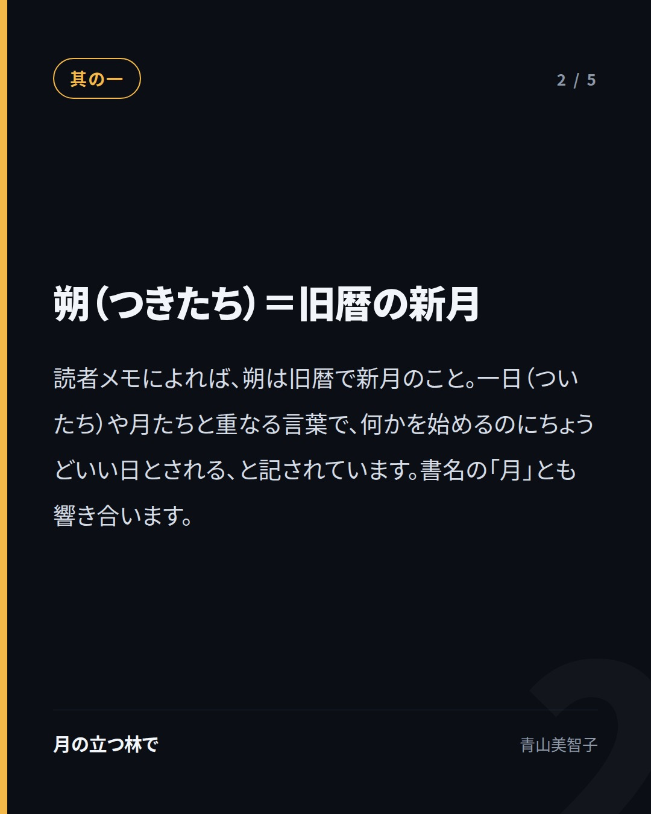
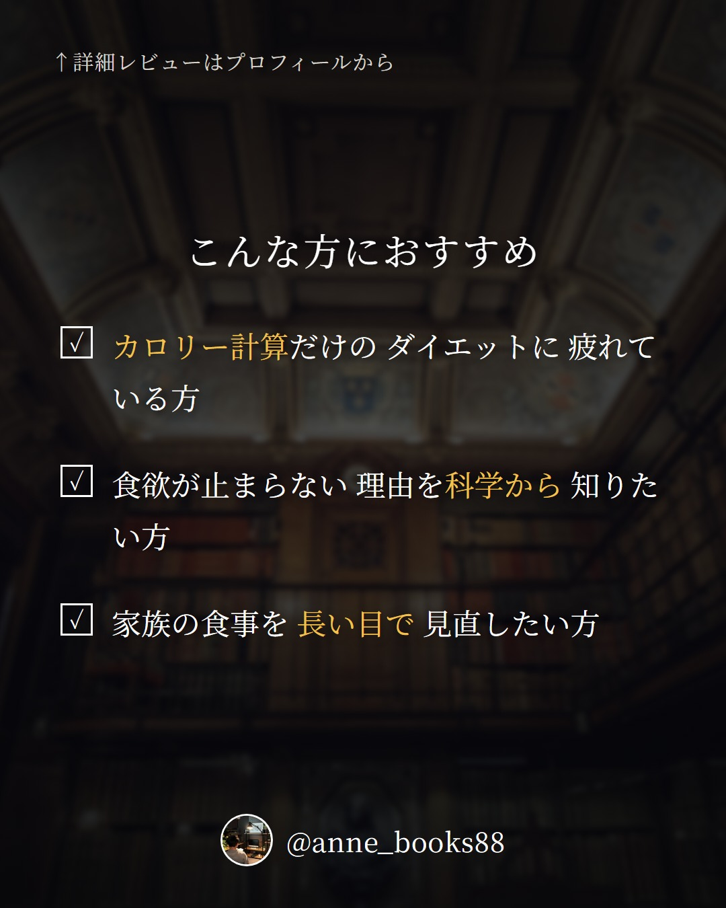

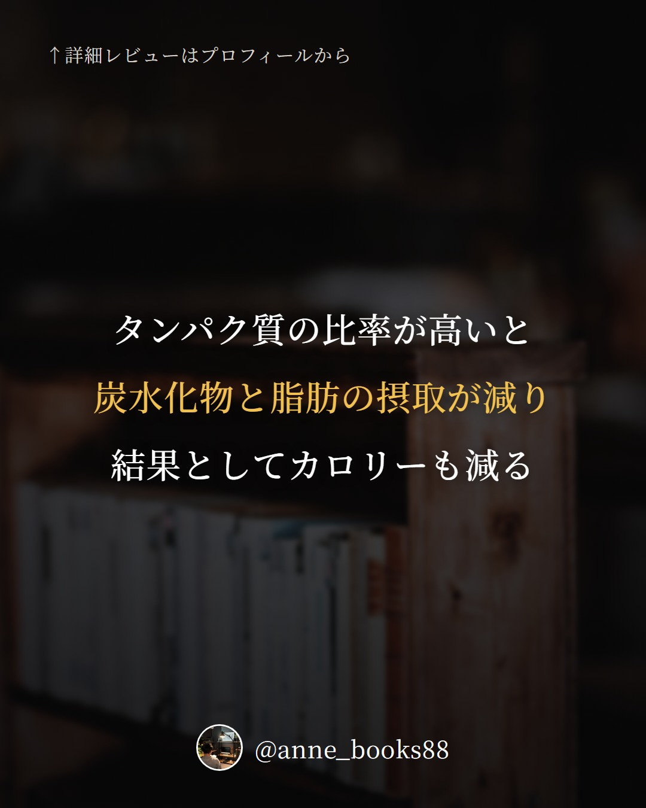
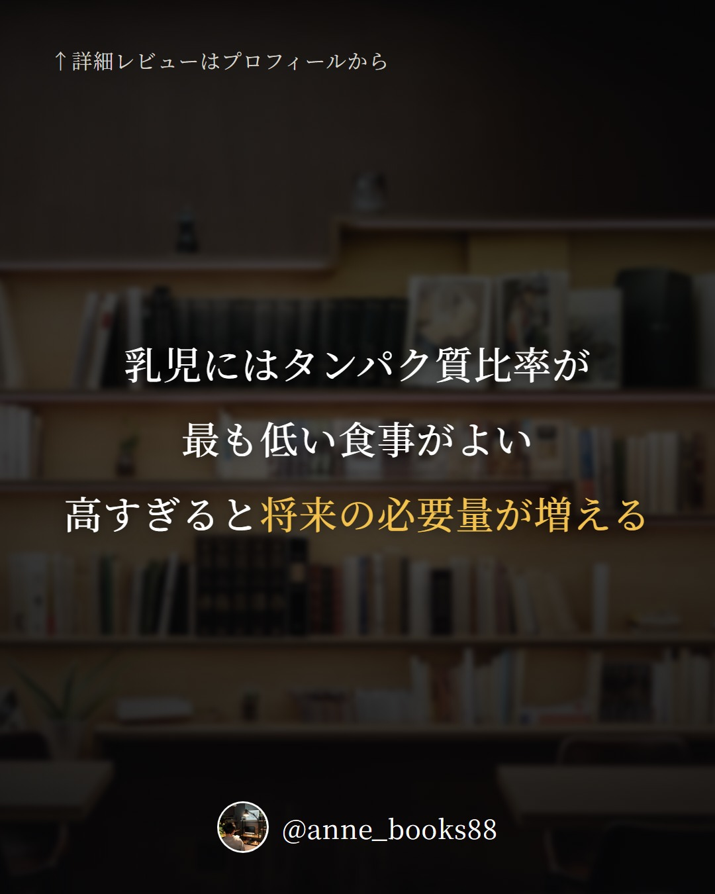

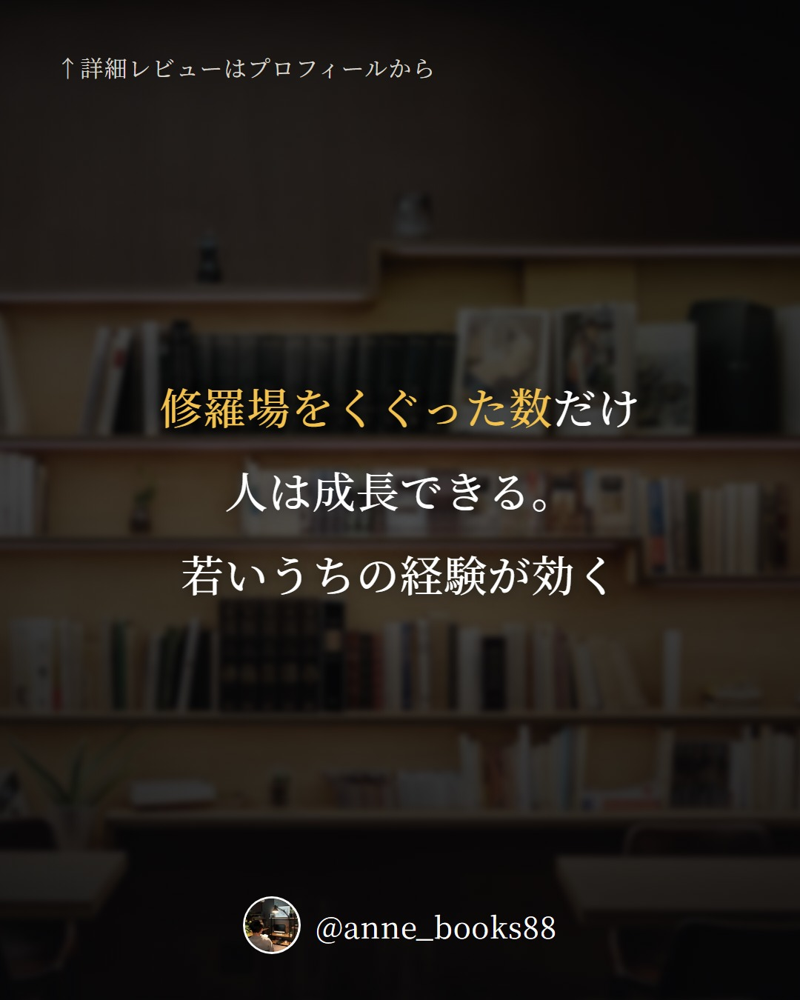
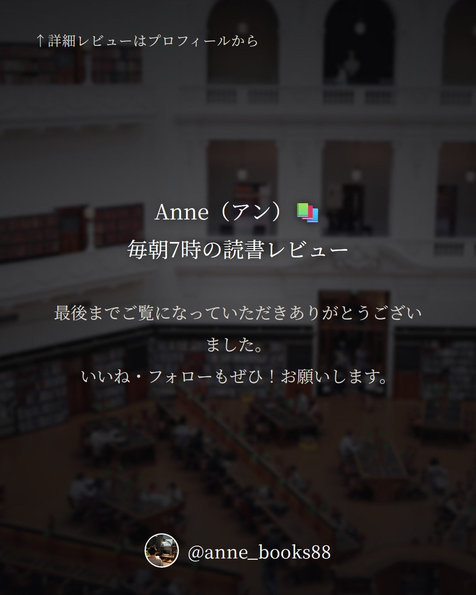
カードの文言
- 1 表紙: 立場が人を育てる を地でいく会社の 人材育成のしくみ
- 2 書誌情報: 2020年2月7日 / 上阪徹
- 3 おすすめ1: 若手を伸ばす しくみを社内に つくりたい方
- 3 おすすめ2: 新規事業の提案に 挑戦してみたい方
- 3 おすすめ3: 自分の仕事に 誇りを持てているか 見直したい方
- 4 問いかけ: あなたは自分で勝ち取った仕事を 誇りを持って やれていますか
- 5 本文: 新卒内定時に子会社社長。 20代で本社取締役。 常識破りの育成のしくみ
- 6 本文: 内定者や新卒でも 提案次第で出資を勝ち取り 起業できる
- 7 本文: 3期連続赤字なら事業整理や 代表交代の提案もある シビアな世界
- 8 本文: 修羅場をくぐった数だけ 人は成長できる。 若いうちの経験が効く
- 9 まとめ: チャレンジを 本気で回すしくみを 取材から知る一冊
キャプション
今回は、人材育成のしくみを取材から描いたビジネス書です。 出版社の紹介によると、新卒内定時に子会社社長、20代で本社取締役、月2回の人事異動、年2回の社内異動公募、子会社100社以上と、常識破りのしくみが並びます。連結売上高が5000億円に迫り、従業員数5000名を超える企業で、本社取締役や子会社社長たちが自らの仕事観やリーダーシップマインドを本音で語っているそうです。 読んで印象に残ったのは、内定者や新卒でも提案次第で出資を勝ち取り起業できるという点。ただし3期連続赤字や社内規定に触れれば、事業整理・撤退や代表交代を提案されるというシビアさもセットです。チャンスの大きさと責任の重さが釣り合っている。 まさに「立場が人を育てる」を地でいっている会社だと感じました。そして、修羅場をくぐった数だけ人は成長できる。若いうちにその経験を積めるかどうかが、後々大きく効いてくるのだと思います。 トヨタにもチャレンジを大切にする文化があると思いますが、自分で一から提案して新しい事業を勝ち取り、自分の仕事に誇りを持って死ぬ気でやれているか。読み終えて、そこを改めて考えさせられました。 あなたの今の仕事は、誰かに与えられたものですか。それとも自分で勝ち取ったものですか。
書籍固有ハッシュタグ
根拠メモ (grounding)
- cover「立場が人を育てる」＝読書メモの記述をそのまま使用
- recommend1・2＝出版社紹介の育成のしくみ／読書メモの起業できる記述より
- recommend3・question＝読書メモ「自分の仕事に誇りをもって死ぬ気でやれているか」より
- points1＝出版社紹介の「新卒内定時に子会社社長」「20代で本社取締役」
- points2＝読書メモ「内定者/新卒でも提案次第で出資を勝ち取り起業できる」
- points3＝読書メモ「3期連続赤字や社内規定に触れると事業整理/撤退や代表交代を提案される」
- points4＝読書メモ「修羅場をくぐった数だけ人は成長できる」
- summary＝出版社紹介の「徹底取材」と読書メモ全体からの要約
- caption内の売上高・従業員数・子会社数＝出版社による内容紹介が根拠（本文で確認したものではない旨を明記）
- caption末尾の問いかけ＝一般論（データに根拠なし、読者への語りかけ）
08/29 (Sat)
脱日本的思考のすゝめ
永田 公彦
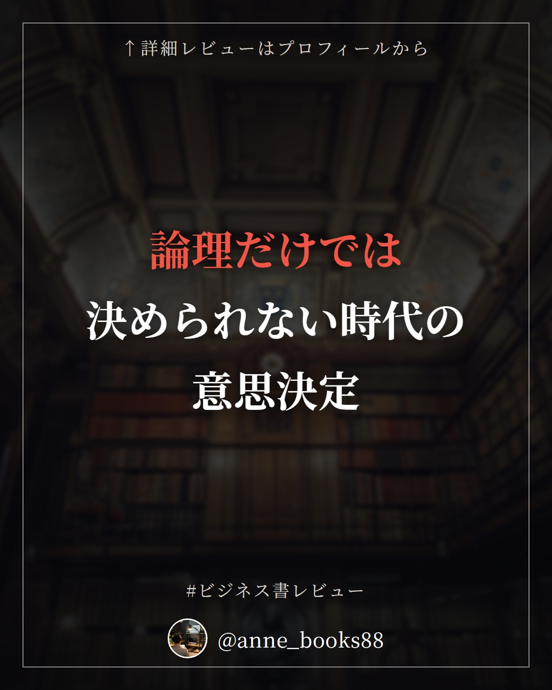
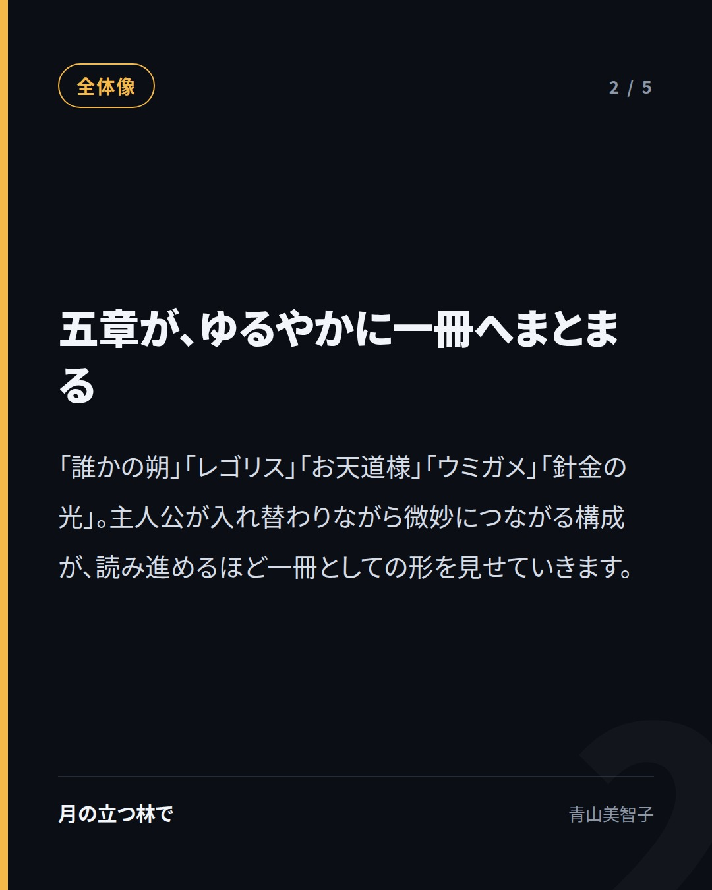
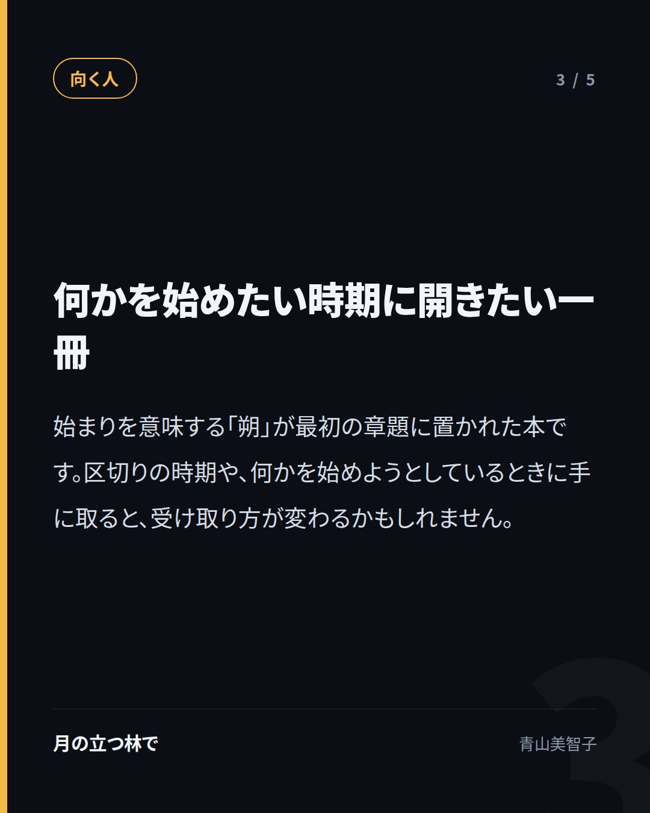
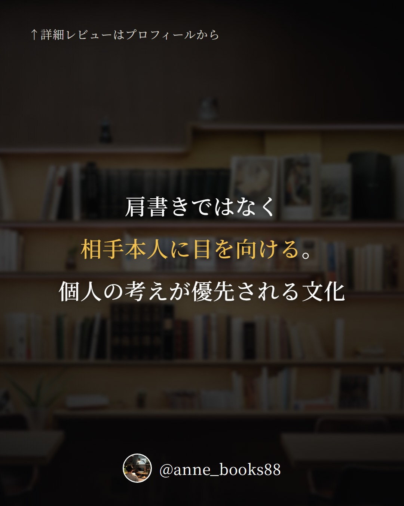


カードの文言
- 1 表紙: 日本の当たり前を 一度脇に置く グローバル思考
- 2 書誌情報: 2023年3月1日 / 永田 公彦
- 3 おすすめ1: 外国人の同僚や取引先と 働く機会が増えた方
- 3 おすすめ2: 英語力より先に 何を鍛えるべきか 知りたい方
- 3 おすすめ3: 意思決定の遅さを 組織の課題だと 感じている方
- 4 問いかけ: あなたが当たり前だと 思っている働き方は 海外でも通じますか
- 5 本文: 肩書きではなく 相手本人に目を向ける。 個人の考えが優先される文化
- 6 本文: 戦略と文化がぶつかれば 必ず文化が勝つ。 人の習慣は変えられない
- 7 本文: 名前を呼ぶ、あいさつする、 お礼を言う。 日本人が苦手な基本動作
- 8 本文: Yesと言う割にレスが遅い。 意思決定と初動の遅さを 見直す
- 9 まとめ: 7つの当たり前から抜け出し 異文化の中で働く 実践の手引き
キャプション
今回はグローバルビジネスの現場で使う「異文化マネジメント」の本です。パリを拠点に20年以上、欧州・日本・アジアでコンサルティングとグローバルリーダーシップ教育を行ってきた著者が、日本文化や日本企業の特質を踏まえて実践方法を解説しています（ここは出版社の内容紹介より）。 読んでいて特に残ったのは三つでした。ひとつめは、肩書きにこだわらず相手本人に目をやること。日本人はどうしても肩書に目がいきますが、まず何より個人の考えが優先される文化がある、という指摘です。 ふたつめは、戦略と文化がぶつかったときは必ず文化がまさるということ。人の習慣は変えられない、という前提に立つのは大事だと感じました。 三つめは、日本人が苦手だけれど意識してやるべきこととして挙げられていた、名前を呼ぶ・あいさつをする・お礼を言う、そして早く本音に入ること。Yesと言う割にレスが遅い、という点は耳が痛いところで、意思決定と初動の遅さは意識して見直していきたいと思いました。 目次には「外から目線で日本を伝える能力」「英語や戦略よりも大事な異文化マネジメント力」などが並びます。英語より先に鍛えるものがある、という視点が知りたい方はぜひ。
書籍固有ハッシュタグ
根拠メモ (grounding)
- 書名・著者・出版社・出版日はすべて書誌データより
- cover「日本の当たり前」は序章『7つの「当たり前」から抜け出し人生の可能性を拡げる』より
- recommend1は内容紹介『外国人の社員、クライアント、事業パートナーなどと接する機会が国内外で増えています』より
- recommend2は第2章『英語や戦略よりも大事な異文化マネジメント力』より
- recommend3は読書メモ『意思決定と初動の遅さを意識して見直していく』より
- question は序章タイトルの「当たり前から抜け出し」を問いに変換したもの
- points1は読書メモ『肩書きにこだわらず相手本人に目をやる／まず何より個人の考えが優先される文化』より
- points2は読書メモ『戦略と文化は必ず文化がまさる（人の習慣は変えられない）』より
- points3は読書メモ『名前を呼ぶこと/あいさつをすること/お礼（ありがとう）をいうこと』より
- points4は読書メモ『日本人はYesという割にレスが遅い／意思決定と初動の遅さ』より
- summaryは序章タイトルと内容紹介『実践方法について解説します』より
- キャプションの著者経歴（パリ拠点・20年以上・欧州/日本/アジア）は出版社の内容紹介より、その旨を明記
- キャプションの目次言及は第1章・第2章のタイトルより
- ジャンル・ページ数は不明のため触れていない
08/30 (Sun)
キーエンス解剖 最強希望のメカニズム
不明
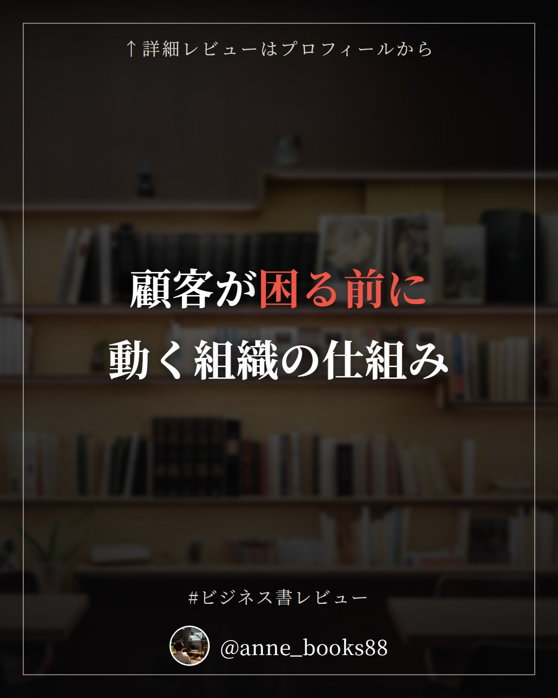
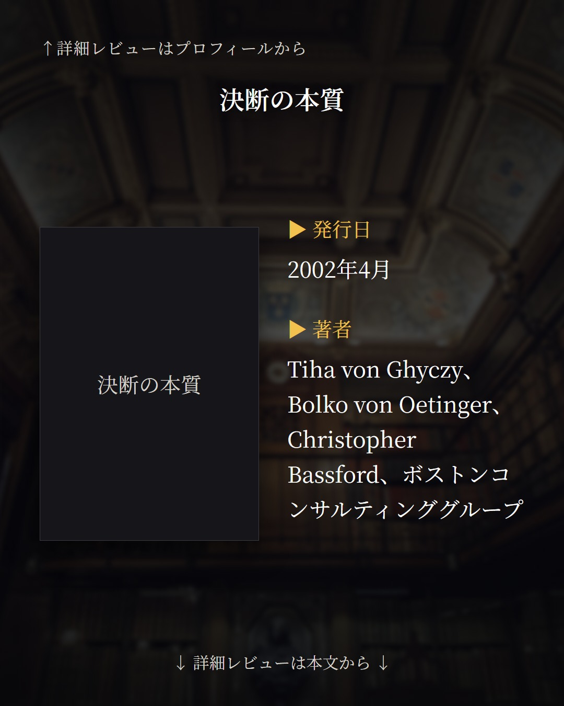
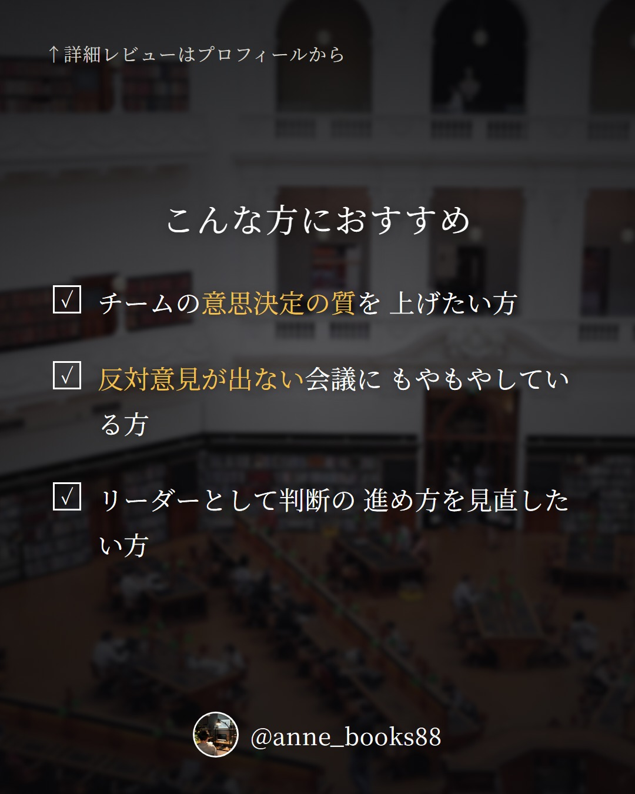

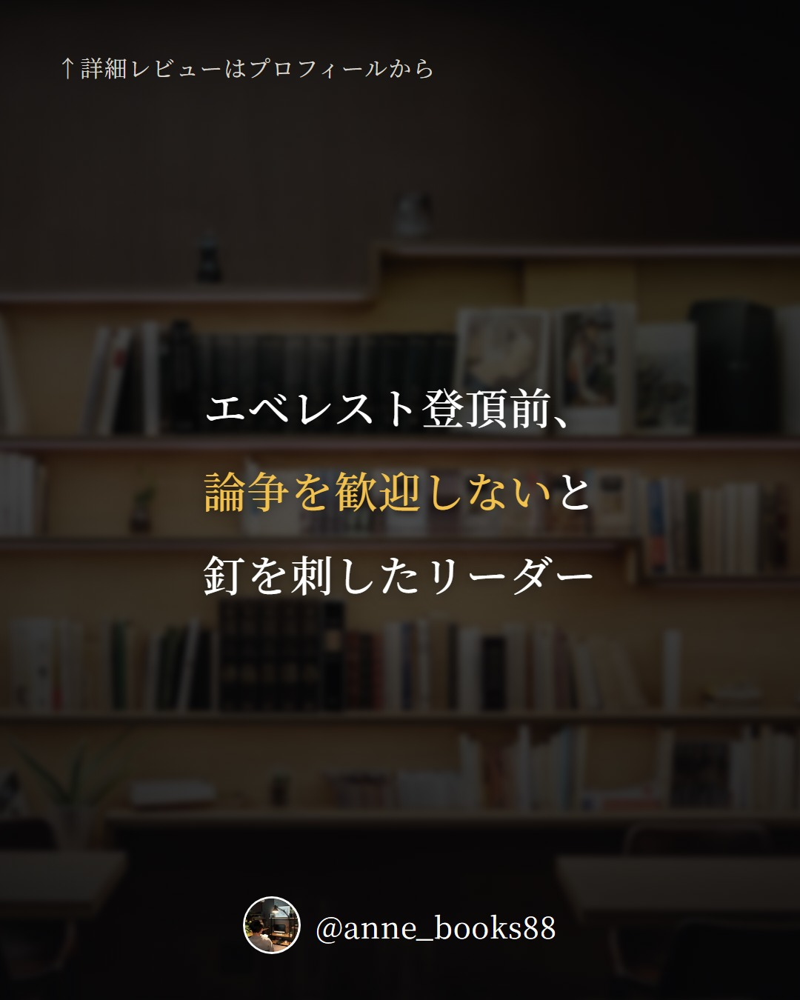

カードの文言
- 1 表紙: 顧客が困る前に 動く組織の仕組み
- 2 書誌情報: / 不明
- 3 おすすめ1: 営業の仕事を 広げる手がかりが欲しい方
- 3 おすすめ2: 顧客の潜在ニーズを つかむ方法を知りたい方
- 3 おすすめ3: 時間あたりの成果を 意識して働きたい方
- 4 問いかけ: お客様に聞いてから 動くのでは、 もう遅いのでは？
- 5 本文: 「他にお困りの方は いませんか？」 一言が仕事を広げる
- 6 本文: 行動しても書かなければ 仕事をしていないのと同じ。 記録が質を上げる
- 7 本文: 顧客の潜在ニーズを 自発的に書き出す ニーズカードは月1回がノルマ
- 8 本文: 10割の完璧より、 8割納得の提案を早く。 営業はスピード感が命
- 9 まとめ: 売上を全従業員の労働時間で割る。 時間への意識を組織で揃える一冊
キャプション
今回は、営業と組織づくりの本です。読みながら何度も線を引いたのは「行動していても書かなければ、仕事をしていないのと一緒」という考え方でした。動いた事実を記録に残し、後任に渡すことで仕事の質が上がる。私自身、耳が痛いところです。 もうひとつ印象的だったのが、顧客の潜在的なニーズを自発的に書き出す「ニーズカード」。月1回がノルマとして仕組み化されています。どういう商品が欲しいかを聞いてから動くのでは遅く、相手が何に困っているのかを、相手の立場に立って徹底的に考え抜く。その姿勢が個人の心がけではなく、仕組みとして回っているのが面白いところでした。 提案についても、10割対応するチャンピオンスペックを目指しがちなところを、8割納得するもので早く出す。とにかくスピード感が命を地で行く会社なのだと感じます。 そして「時間チャージ」。売上・付加価値を全従業員の労働時間で割った数字を目標として掲げ、時間に対する思いを改めてもらう。時間あたりでどれだけの価値を出せているか、自分の一日にも置き換えて考えたくなりました。 「他にお困りの方はいませんか？」。明日、誰かに聞いてみませんか。
書籍固有ハッシュタグ
根拠メモ (grounding)
- 表紙・問いかけ：読書メモ「どういう商品をお客様が欲しいか聞いてから動くのでは遅い」
- おすすめ1：読書メモ「営業として仕事を広げるコツ」
- おすすめ2：読書メモ「ニーズカード（自発的に顧客の潜在的ニーズを記載するカード）」
- おすすめ3：読書メモ「時間チャージ）売上・付加価値を全従業員の労働時間で割る」
- points1：読書メモ「他にお困りの方はいませんか？」
- points2：読書メモ「行動していても書かなければ仕事していないのと一緒。記録に残して後任に残す事で質の高い仕事ができる」
- points3：読書メモ「ニーズカード…1回/月がノルマ」
- points4：読書メモ「チャンピオンスペックを目指しがちだが、8割納得するものを提案する事が多い」「営業はスピード感が命」
- まとめ：読書メモ「時間チャージ」「時間に対する思いを改めてほしいという願い」
- 著者・出版日・出版社・ページ数は根拠データに記載なし（不明のまま）
- キャプションの「耳が痛い」等の所感は読書メモの記述に対する感想であり、体験談ではない
09/01 (Tue)
フランス人は10着しか服を持たない
ジェニファー・スコット, 神崎朗子
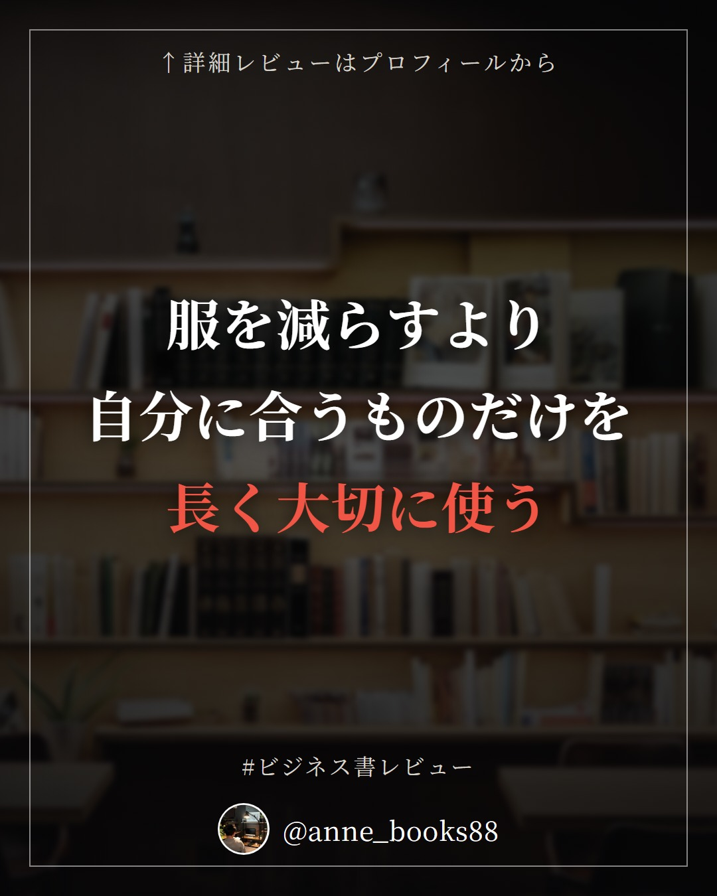


カードの文言
- 1 表紙: 服を減らすより 自分に合うものだけを 長く大切に使う
- 2 書誌情報: 2020年9月12日 / ジェニファー・スコット, 神崎朗子
- 3 おすすめ1: クローゼットを 開けるたびに もやっとする方
- 3 おすすめ2: 高かったから捨てられない という理由で 服を持ち続けている方
- 3 おすすめ3: 暮らしの質を 少しずつ上げていきたい方
- 4 問いかけ: その服は本当に必要で 今の自分に 合っていますか
- 5 本文: パリの人は同じ服を 着まわすことを厭わない 大事なのは自分らしさ
- 6 本文: 同じ服はありえないという カリフォルニアとの対比が 価値観の違いを映す
- 7 本文: お金を出したから捨てられない その理由で 持ち続けていないか
- 8 本文: いつも一番いいものを使えば 日常が特別になる
- 9 まとめ: 部屋を整え良いものを長く使う その積み重ねが 生活の質を上げていく
キャプション
今回は、暮らし方と身の回りのものとの付き合い方を考える一冊です。100万部のベストセラーシリーズの最終巻で、2020年に文庫化されたものだそうです。 おそらくキラキラ系女子が読む本なのだと思いますが、ローランドさんがおすすめしていたので手に取りました。 面白かったのは、パリの人とカリフォルニアの人の対比です。パリの人は同じ服を着まわすことを厭わない。大事なのは自分らしさを表現できているかどうか。一方でカリフォルニアの人にとって、同じ服の着まわしはありえない。この違いが繰り返し書かれていて、自分がどちらに近いかを考えさせられました。 もうひとつ刺さったのが、お金を出して買ったからその服は捨てられない、となっていないかという問いかけ。その服は本当に必要で今の自分に合っているのか、自信を持って外を歩けるのか。読みながら思わずワードローブを開けて、自分が何をどれだけ大切にしているのかを確かめたくなりました。 出版社の紹介によれば、したくないことは感じよくきっぱりと断る、誰にでも礼儀をもって接する、といった生き方の話も含まれているようです。 常に部屋をきれいに保つことが自分の気持ちを上げることにつながる。良いものを長く使うことが生活の質を上げるコツ。いつも一番いいものを使えば、日常が特別になる。 クローゼットを開けるのが少し憂うつな方は、ぜひ。
書籍固有ハッシュタグ
根拠メモ (grounding)
- 表紙・まとめ「良いものを長く使う」「生活の質を上げる」＝読書メモの最終項目
- recommend 1・2＝読書メモ「お金を出して買ったからその服は捨てられないとなってないか」
- recommend 3＝読書メモ「良いものを長く使うことが生活の質を上げるコツ」
- question＝読書メモ「その服は本当に必要で今の自分に合っているか」
- points1・2＝読書メモのパリ人とカリフォルニア人の対比
- points4＝読書メモ「いつも1番いいものを使えば日常が特別になり、人生が楽しくなる」
- キャプションの「100万部」「文庫化」「断る・礼儀」＝出版社の内容紹介（そう明記）
- キャプションの「ローランドがおすすめ」「キラキラ系女子が読む本」＝読書メモの所感
- published 2020年9月＝出版日2020年9月12日
- ジャンル表記は避けた（データ上不明のため）
09/02 (Wed)
パナソニック覚醒
樋口泰行


カードの文言
- 1 表紙: 変われなかった会社が 変われた理由
- 2 書誌情報: 2022年4月15日 / 樋口泰行
- 3 おすすめ1: 組織の変革を 任されている方
- 3 おすすめ2: 人の意識から 変えたい方
- 3 おすすめ3: 事業の見直しを 先送りしたくない方
- 4 問いかけ: 制度を作っただけで 組織は変わりましたか
- 5 本文: 1階はカルチャーマインド改革。 人の意識が変わらないと 組織は変わらない
- 6 本文: 2階はソリューションシフト、 3階は事業立地改革。 順番に積み上げる
- 7 本文: 創業の工場だからと 聖域を作らない。 シビアに見極める
- 8 本文: 画一的な服装は 発想を画一的にする。 完全私服化という選択
- 9 まとめ: ビッグピクチャーを描き 聖域なく見極める。 変革の順序が見える一冊
キャプション
今回は、組織変革の実践記録です。25年ぶりに古巣へ戻った樋口泰行さんが、パナソニック コネクトの社長として取り組んだ変革を42項目にわたって語っています。 面白いと感じたのは、変革を「1階・2階・3階」と building のように積み上げて考えている点。1階はカルチャーマインド改革で、まずは人の意識が変わらないと絶対に会社や組織は変わらないという考え方。その上に2階のソリューションシフト、ビジネスモデル改革、そして3階の事業立地改革が乗る。順番が明確なのが印象的でした。 もうひとつは、聖域を作らないこと。創業の品目だから、創業の工場だから、という理由で判断を甘くしない。松下電器の聖地とされた岡山工場の閉鎖という決断についても語られています。ポートフォリオマネジメントから逃げない、という項目がまさにそれだと思いました。 そして個人的にいちばん腑に落ちたのが、画一的な服装は発想を画一的にする、という指摘。会社を完全私服化して、自由なアイディアが生まれやすい状態をつくる。小さく見えて、意識に効く打ち手だと感じます。 変革推進室を作っただけでは足りない。何から手をつけるか迷っている方に。
書籍固有ハッシュタグ
根拠メモ (grounding)
- 表紙「変われなかった会社が変われた理由」＝内容紹介の『変われなかった会社が変われた』という社内外評価
- recommend3項目＝読書メモの意識改革・PPM見極め、内容紹介の変革推進室の記述からの読者想定（対象読者はデータに明記なし、一般的推定）
- 問いかけ「制度を作っただけで組織は変わったか」＝内容紹介『変革推進室や改革本部を作っただけではダメ』
- points1・2＝読書メモの1階カルチャーマインド改革/2階ソリューションシフト・ビジネスモデル改革/3階事業立地改革
- points3＝読書メモ『創業の品目だから…創業の工場（岡山工場）だから…といった聖域を作ってはダメ、シビアに見ていく』
- points4＝内容紹介『画一的な「服装」は、発想を画一的にする』および読書メモの完全私服化
- summary＝読書メモ『ビッグピクチャーを描くことの必要性。PPMの見極めの必要性』
- キャプションの8630億円ブルーヨンダー買収には触れず、岡山工場閉鎖の決断は内容紹介に記載あり
- 著者の25年ぶり出戻り・42項目・ポートフォリオマネジメントから逃げない＝いずれも出版社の内容紹介
- ジャンル・ページ数は不明のため記載せず
09/03 (Thu)
武器としての組織心理学
山浦一保


カードの文言
- 1 表紙: 厄介だけど 放置できない 人間関係の扱い方
- 2 書誌情報: 2021年9月16日 / 山浦一保
- 3 おすすめ1: チームの人間関係に 手を焼いているリーダーの方
- 3 おすすめ2: 妬みや対立を 前向きな力に 変えたい方
- 3 おすすめ3: 科学的な根拠から マネジメントを 学び直したい方
- 4 問いかけ: 人が動かないのは やる気の問題ではなく 心理の仕組みでは？
- 5 本文: 人は保有することに こだわる。だから現状維持を 選んでしまう
- 6 本文: 妬みには悪性と良性がある。 負けず嫌いは よい方へ向ける
- 7 本文: 大体の事は面倒くさい。 でも丁寧にやることが 大事につながる
- 8 本文: リスクを取っても大丈夫。 その心理的安全性が 職場を支える
- 9 まとめ: 科学的エビデンスで 人間の本性を見直す リーダーシップの教科書
キャプション
今回は、リーダーシップを心理学から捉え直す一冊です。 読んでいて一番おもしろかったのは、人間は生来「保有すること」へのこだわりが強い、という話でした。カーネマンのマグカップ実験が紹介されていて、手放したくない気持ちが強いからこそ、現状維持で安心を得ようとする非合理的な選択をしてしまう。組織が変わらない理由を、性格や意欲ではなく人間の仕組みとして説明されると納得感がありました。 もうひとつは妬みの扱い方です。妬みには排他的な悪性のものと、羨望や協力につながる良性のものがある。同じ負けず嫌いでも、どちらに向くかで職場の空気はまるで変わる。ポジティブなほうへ向けるという視点は、自分自身にも使えると感じました。 そして、世の中の大体の事は面倒くさいけれど、丁寧にやることが大事につながるという一文。派手さはないですが、ここが一番効く気がしています。個人がリスクを取っても大丈夫だと思える心理的安全性、謝ることが自分自身のストレス低減にもつながるという指摘も印象に残りました。 出版社の紹介では、心理学から脳科学、集団力学まで科学的エビデンスに基づく「リーダーシップの新しい教科書」とされています。人を動かす立場にいる方は、手元に置いておくと心強い一冊だと思います。
書籍固有ハッシュタグ
根拠メモ (grounding)
- 表紙「厄介だけど放置できない人間関係」＝出版社内容紹介の文言
- recommend1・2＝内容紹介「マネジャー・経営者・監督・コーチなど全てのリーダー」＋読書メモの妬みの項
- recommend3＝内容紹介「科学的エビデンスに基づく」
- question＝内容紹介「人間の本性を暴く」「マネジメントの通念をひっくり返す」を問いに変換
- points1＝読書メモ「保有することへのこだわり／カーネマンのマグカップ実験／現状維持して安心」
- points2＝読書メモ「妬みは悪性と良性／負けず嫌いをポジティブなほうに」
- points3＝読書メモ「大体の事は面倒くさいが丁寧にやることが大事につながる」
- points4＝読書メモ「個人がリスクテイクしても大丈夫という心理的安全性の高い職場」
- summary＝内容紹介「科学的エビデンス」「リーダーシップの新しい教科書」「人間の本性」
- キャプションの謝罪の記述＝読書メモ「謝ることは自分自身のストレス低減にもつながる」
- 出版社紹介由来の箇所はキャプション内で「出版社の紹介では」と明示